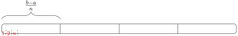
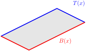
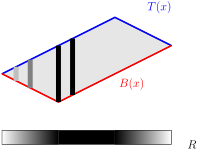
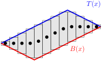
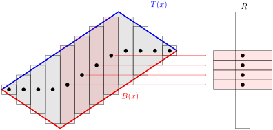
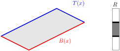
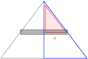
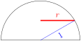
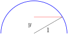

Section 7.3 Centre of Mass and Torque
Subsection 7.3.1 Centre of Mass
If you support a body at its center of mass (in a uniform gravitational field) it balances perfectly. That's the definition of the center of mass of the body.

If the body consists of a finite number of masses \(m_1\text{,}\) \(\cdots\text{,}\) \(m_n\) attached to an infinitely strong, weightless (idealized) rod with mass number \(i\) attached at position \(x_i\text{,}\) then the center of mass is at the (weighted) average value of \(x\text{:}\)
Equation 7.3.1. Centre of mass (discrete masses).
This formula for the center of mass is derived in the following (optional) section. See equation (7.3.14).
For many (but certainly not all) purposes an (extended rigid) body acts like a point particle located at its center of mass. For example it is very common to treat the Earth as a point particle. Here is a more detailed example in which we think of a body as being made up of a number of component parts and compute the center of mass of the body as a whole by using the center of masses of the component parts. Suppose that we have a dumbbell which consists of
- a left end made up of particles of masses \(m_{l,1}\text{,}\) \(\cdots\text{,}\) \(m_{l,3}\) located at \(x_{l,1}\text{,}\) \(\cdots\text{,}\) \(x_{l,3}\) and
- a right end made up of particles of masses \(m_{r,1}\text{,}\) \(\cdots\text{,}\) \(m_{r,4}\) located at \(x_{r,1}\text{,}\) \(\cdots\text{,}\) \(x_{r,4}\) and
- an infinitely strong, weightless (idealized) rod joining all of the particles.
Then the mass and center of mass of the left end are
and the mass and center of mass of the right end are
The mass and center of mass of the entire dumbbell are
So we can compute the center of mass of the entire dumbbell by treating it as being made up of two point particles, one of mass \(M_l\) located at the centre of mass of the left end, and one of mass \(M_r\) located at the center of mass of the right end.
Example 7.3.2. Work and Centre of Mass.
Here is another example in which an extended body acts like a point particle located at its centre of mass. Imagine that there are a finite number of masses \(m_1,\cdots,m_n\) arrayed along a (vertical) \(z\)-axis with mass number \(i\) attached at height \(z_i\text{.}\) Note that the total mass of the array is \(M=\sum_{i=1}^n m_i\) and that the centre of mass of the array is at height
Now suppose that we lift all of the masses, against gravity, to height \(Z\text{.}\) So after the lift there is a total mass \(M\) located at height \(Z\text{.}\) The \(i^{\rm th}\) mass is subject to a downward gravitational force of \(m_i g\text{.}\) So to lift the \(i^{\rm th}\) mass we need to apply a compensating upward force of \(m_ig\) through a distance of \(Z-z_i\text{.}\) This takes work \(m_i g (Z-z_i)\text{.}\) So the total work required to lift all \(n\) masses is

So the work required to lift the array of \(n\) particles is identical to the work required to lift a single particle, whose mass, \(M\text{,}\) is the total mass of the array, from height \(\bar z\text{,}\) the centre of mass of the array, to height \(Z\text{.}\)
Example 7.3.3. Example 7.3.2, continued.
Imagine, as in Example 7.3.2, that there are a finite number of masses \(m_1,\cdots,m_n\) arrayed along a (vertical) \(z\)-axis with mass number \(i\) attached at height \(z_i\text{.}\) Again, the total mass and centre of mass of the array are
Now suppose that we lift, for each \(1\le i\le n\text{,}\) mass number \(i\text{,}\) against gravity, from its initial height \(z_i\) to a final height \(Z_i\text{.}\) So after the lift we have a new array of masses with total mass and centre of mass
To lift the \(i^{\rm th}\) mass took work \(m_i g (Z_i-z_i)\text{.}\) So the total work required to lift all \(n\) masses was
So the work required to lift the array of \(n\) particles is identical to the work required to lift a single particle, whose mass, \(M\text{,}\) is the total mass of the array, from height \(\bar z\text{,}\) the initial centre of mass of the array, to height \(\bar Z\text{,}\) the final centre of mass of the array.
Now we'll extend the above ideas to cover more general classes of bodies. If the body consists of mass distributed continuously along a straight line, say with mass density \(\rho(x)\)kg/m and with \(x\) running from \(a\) to \(b\text{,}\) rather than consisting of a finite number of point masses, the formula for the center of mass becomes
Equation 7.3.4. Centre of mass (continuous mass).
If the body is a two dimensional object, like a metal plate, lying in the \(xy\)-plane, its center of mass is a point \((\bar x,\bar y)\) with \(\bar x\) being the (weighted) average value of the \(x\)-coordinate over the body and \(\bar y\) being the (weighted) average value of the \(y\)-coordinate over the body. To be concrete, suppose the body fills the region
in the \(xy\)-plane. For simplicity, we will assume that the density of the body is a constant, say \(\rho\text{.}\) When the density is constant, the center of mass is also called the centroid and is thought of as the geometric center of the body.
To find the centroid of the body, we use the use our standard “slicing” strategy. We slice the body into thin vertical strips, as illustrated in the figure below.

Here is a detailed description of a generic strip.
- The strip has width \(\dee{x}\text{.}\)
- Each point of the strip has essentially the same \(x\)-coordinate. Call it \(x\text{.}\)
- The top of the strip is at \(y=T(x)\) and the bottom of the strip is at \(y=B(x)\text{.}\)
-
So the strip has
- height \(T(x)-B(x)\)
- area \([T(x)-B(x)]\,\dee{x}\)
- mass \(\rho[T(x)-B(x)]\,\dee{x}\)
- centroid, i.e. middle point, \(\big(x\,,\,\frac{B(x)+T(x)}{2}\big)\text{.}\)
In computing the centroid of the entire body, we may treat each strip as a single particle of mass \(\rho[T(x)-B(x)]\,\dee{x}\) located at \(\big(x\,,\,\frac{B(x)+T(x)}{2}\big)\text{.}\) So: The mass of the entire body bounded by curves \(T(x)\) above and \(B(x)\) below is where \(A=\int_a^b [T(x)-B(x)]\,\dee{x}\) is the area of the region. The coordinates of the centroid are
Equation 7.3.5. Centroid of object with constant density.

If the body has constant density \(\rho\) and fills the region
then the same computation as above gives: The mass of the entire body bounded by curves \(L(y)\) to the left and \(R(y)\) to the right is where \(A=\int_c^d [R(y)-L(y)]\,\dee{y}\) is the area of the region, and gives the coordinates of the centroid to be
Equation 7.3.6. Centroid of object with constant density.
Example 7.3.7. Centroid of a quarter ellipse.
Find the \(x\)-coordinate of the centroid (centre of gravity) of the plane region \(R\) that lies in the first quadrant \(x\ge 0, \ y\ge 0\) and inside the ellipse \(4x^2+9y^2=36\text{.}\) (The area bounded by the ellipse \(\frac{x^2}{a^2}+\frac{y^2}{b^2}=1\) is \(\pi ab\) square units.)

Solution: In standard form \(4x^2+9y^2=36\) is \(\frac{x^2}{9}+\frac{y^2}{4}=1\text{.}\) So, on \(R\text{,}\) \(x\) runs from \(0\) to \(3\) and \(R\) has area \(A=\frac{1}{4}\pi\times 3\times 2=\frac{3}{2}\pi\text{.}\) For each fixed \(x\text{,}\) between \(0\) and \(3\text{,}\) \(y\) runs from \(0\) to \(2\sqrt{1-\frac{x^2}{9}}\text{.}\) So, applying (7.3.5.b) with \(a=0\text{,}\) \(b=3\text{,}\) \(T(x)=2\sqrt{1-\frac{x^2}{9}}\) and \(B(x)=0\text{,}\)
Sub in \(u=1-\frac{x^2}{9}\text{,}\) \(du=-\frac{2}{9}x\,\dee{x}\text{.}\)
Example 7.3.8. Centroid of a quarter disk.
Find the centroid of the quarter circular disk \(x\ge 0\text{,}\) \(y\ge 0\text{,}\) \(x^2+y^2\le r^2\text{.}\)

Solution: By symmetry, \(\bar x=\bar y\text{.}\) The area of the quarter disk is \(A=\frac{1}{4}\pi r^2\text{.}\) By (7.3.5.b) with \(a=0\text{,}\) \(b=r\text{,}\) \(T(x)=\sqrt{r^2-x^2}\) and \(B(x)=0\text{,}\)
To evaluate the integral, sub in \(u=r^2-x^2\text{,}\) \(du=-2x\,\dee{x}\text{.}\)
So
As we observed above, we should have \(\bar x=\bar y\text{.}\) But, just for practice, let's compute \(\bar y\) by the integral formula (7.3.5.c), again with \(a=0\text{,}\) \(b=r\text{,}\) \(T(x)=\sqrt{r^2-x^2}\) and \(B(x)=0\text{,}\)
as expected.
Example 7.3.9. Centroid of a half disc.
Find the centroid of the half circular disk \(y\ge 0\text{,}\) \(x^2+y^2\le r^2\text{.}\)

Solution: Once again, we have a symmetry —- namely the half disk is symmetric about the \(y\)-axis. So the centroid lies on the \(y\)-axis and \(\bar x=0\text{.}\) The area of the half disk is \(A=\frac{1}{2}\pi r^2\text{.}\) By (7.3.5.c), with \(a=-r\text{,}\) \(b=r\text{,}\) \(T(x)=\sqrt{r^2-x^2}\) and \(B(x)=0\text{,}\)
Example 7.3.10. Another centroid.
Find the centroid of the region \(R\) in the diagram.

Solution: By symmetry, \(\bar x=\bar y\text{.}\) The region \(R\) is a \(2\times 2\) square with one quarter of a circle of radius \(1\) removed and so has area \(2\times 2-\frac{1}{4}\pi=\frac{16-\pi}{4}\text{.}\) The top of \(R\) is \(y=T(x)=2\text{.}\) The bottom is \(y=B(x)\) with \(B(x)\!=\!\sqrt{1-x^2}\) when \(0\le x\le 1\) and \(B(x)\!=\!0\) when \(1\le x\le 2\text{.}\) So
Now we can make use of the starred equation in Example 7.3.8 with \(r=1\) to obtain
\begin{align*} &=\frac{4}{16-\pi}\Big[4-\frac{1}{3}\Big]\\ &=\frac{44}{48-3\pi} \end{align*}Example 7.3.11. Centroid of a triangle and its medians.
Prove that the centroid of any triangle is located at the point of intersection of the medians. A median of a triangle is a line segment joining a vertex to the midpoint of the opposite side.

Solution: Choose a coordinate system so that the vertices of the triangle are located at \((a,0)\text{,}\) \((0,b)\) and \((c,0)\text{.}\) (In the figure below, \(a\) is negative.)

The line joining \((a,0)\) and \((0,b)\) has equation \(bx+ay=ab\text{.}\) (Check that \((a,0)\) and \((0,b)\) both really are on this line.) The line joining \((c,0)\) and \((0,b)\) has equation \(bx+cy=bc\text{.}\) (Check that \((c,0)\) and \((0,b)\) both really are on this line.) Hence for each fixed \(y\) between \(0\) and \(b\text{,}\) \(x\) runs from \(a-\frac{a}{b}y\) to \(c-\frac{c}{b}y\text{.}\)
We'll use horizontal strips to compute \(\bar x\) and \(\bar y\text{.}\) We could just apply equation (7.3.6) with \(c=0\text{,}\) \(d=b\text{,}\) \(R(y)= \frac{c}{b}(b-y)\) (which is gotten by solving \(bx+cy=bc\) for \(x\)) and \(L(y)= \frac{a}{b}(b-y)\) (which is gotten by solving \(bx+ay=ab\) for \(x\)).
But rather than memorizing or looking up those formulae, we'll derive them for this example. So consider a thin strip at height \(y\) as illustrated in the figure above.
- The strip has length\begin{equation*} \ell(y)=\Big[\frac{c}{b}(b-y)-\frac{a}{b}(b-y)\Big]=\frac{c-a}{b}(b-y) \end{equation*}
- The strip has width \(\dee{y}\text{.}\)
- On this strip, \(y\) has average value \(y\text{.}\)
- On this strip, \(x\) has average value \(\frac{1}{2}\big[\frac{a}{b}(b-y)+\frac{c}{b}(b-y)\big]=\frac{a+c}{2b}(b-y)\text{.}\)
As the area of the triangle is \(A=\half (c-a)b\text{,}\)
We have found that the centroid of the triangle is at \((\bar x,\bar y)=\big(\frac{a+c}{3},\frac{b}{3}\big)\text{.}\) We shall now show that this point lies on all three medians.
- One vertex is at \((a,0)\text{.}\) The opposite side runs from \((0,b)\) and \((c,0)\) and so has midpoint \(\half(c,b)\text{.}\) The line from \((a,0)\) to \(\half(c,b)\) has slope \(\frac{b/2}{c/2-a}=\frac{b}{c-2a}\) and so has equation \(y=\frac{b}{c-2a}(x-a)\text{.}\) As \(\frac{b}{c-2a}(\bar x-a) =\frac{b}{c-2a}\big(\frac{a+c}{3}-a\big) =\frac{1}{3}\frac{b}{c-2a}(c+a-3a) =\frac{b}{3} =\bar y\text{,}\) the centroid does indeed lie on this median. In this computation we have implicitly assumed that \(c\ne 2a\) so that the denominator \(c-2a\ne 0\text{.}\) In the event that \(c=2a\text{,}\) the median runs from \((a,0)\) to \(\big(a,\frac{b}{2}\big)\) and so has equation \(x=a\text{.}\) When \(c=2a\) we also have \(\bar x=\frac{a+c}{3}=a\text{,}\) so that the centroid still lies on the median.
- Another vertex is at \((c,0)\text{.}\) The opposite side runs from \((a,0)\) and \((0,b)\) and so has midpoint \(\half(a,b)\text{.}\) The line from \((c,0)\) to \(\half(a,b)\) has slope \(\frac{b/2}{a/2-c}=\frac{b}{a-2c}\) and so has equation \(y=\frac{b}{a-2c}(x-c)\text{.}\) As \(\frac{b}{a-2c}(\bar x-c) =\frac{b}{a-2c}\big(\frac{a+c}{3}-c\big) =\frac{1}{3}\frac{b}{a-2c}(a+c-3c) =\frac{b}{3} =\bar y\text{,}\) the centroid does indeed lie on this median. In this computation we have implicitly assumed that \(a\ne 2c\) so that the denominator \(a-2c\ne 0\text{.}\) In the event that \(a=2c\text{,}\) the median runs from \((c,0)\) to \(\big(c,\frac{b}{2}\big)\) and so has equation \(x=c\text{.}\) When \(a=2c\) we also have \(\bar x=\frac{a+c}{3}=c\text{,}\) so that the centroid still lies on the median.
- The third vertex is at \((0,b)\text{.}\) The opposite side runs from \((a,0)\) and \((c,0)\) and so has midpoint \(\big(\frac{a+c}{2},0\big)\text{.}\) The line from \((0,b)\) to \(\big(\frac{a+c}{2},0\big)\) has slope \(\frac{-b}{(a+c)/2}=-\frac{2b}{a+c}\) and so has equation \(y=b-\frac{2b}{a+c}x\text{.}\) As \(b-\frac{2b}{a+c}\bar x =b-\frac{2b}{a+c}\frac{a+c}{3} =\frac{b}{3} =\bar y\text{,}\) the centroid does indeed lie on this median. This time, we have implicitly assumed that \(a+c\ne 0\text{.}\) In the event that \(a+c=0\text{,}\) the median runs from \((0,b)\) to \((0,0)\) and so has equation \(x=0\text{.}\) When \(a+c=0\) we also have \(\bar x=\frac{a+c}{3}=0\text{,}\) so that the centroid still lies on the median.
Subsection 7.3.2 Optional — Torque
Newton's law of motion says that the position \(x(t)\) of a single particle moving under the influence of a force \(F\) obeys \(mx''(t)=F\text{.}\) Similarly, the positions \(x_i(t)\text{,}\) \(1\le i\le n\text{,}\) of a set of particles moving under the influence of forces \(F_i\) obey \(mx_i''(t)=F_i\text{,}\) \(1\le i\le n\text{.}\) Often systems of interest consist of some small number of rigid bodies. Suppose that we are interested in the motion of a single rigid body, say a piece of wood. The piece of wood is made up of a huge number of atoms. So the system of equations determining the motion of all of the individual atoms in the piece of wood is huge. On the other hand, because the piece of wood is rigid, its configuration is completely determined by the position of, for example, its centre of mass and its orientation. (Rather than get into what is precisely meant by “orientation”, let's just say that it is certainly determined by, for example, the positions of a few of the corners of the piece of wood). It is possible to extract from the huge system of equations that determine the motion of all of the individual atoms, a small system of equations that determine the motion of the centre of mass and the orientation. We can avoid some vector analysis, that is beyond the scope of this course, by assuming that our rigid body is moving in two rather than three dimensions.
So, imagine a piece of wood moving in the \(xy\)-plane.

Furthermore, imagine that the piece of wood consists of a huge number of particles joined by a huge number of weightless but very strong steel rods. The steel rod joining particle number one to particle number two just represents a force acting between particles number one and two. Suppose that
- there are \(n\) particles, with particle number \(i\) having mass \(m_i\)
- at time \(t\text{,}\) particle number \(i\) has \(x\)-coordinate \(x_i(t)\) and \(y\)-coordinate \(y_i(t)\)
- at time \(t\text{,}\) the external force (gravity and the like) acting on particle number \(i\) has \(x\)-coordinate \(H_i(t)\) and \(y\)-coordinate \(V_i(t)\text{.}\) Here \(H\) stands for horizontal and \(V\) stands for vertical.
- at time \(t\text{,}\) the force acting on particle number \(i\text{,}\) due to the steel rod joining particle number \(i\) to particle number \(j\) has \(x\)-coordinate \(H_{i,j}(t)\) and \(y\)-coordinate \(V_{i,j}(t)\text{.}\) If there is no steel rod joining particles number \(i\) and \(j\text{,}\) just set \(H_{i,j}(t)=V_{i,j}(t)=0\text{.}\) In particular, \(H_{i,i}(t)=V_{i,i}(t)=0\text{.}\)
The only assumptions that we shall make about the steel rod forces are
- (A1)
for each \(i\ne j\text{,}\) \(H_{i,j}(t)=-H_{j,i}(t)\) and \(V_{i,j}(t)=-V_{j,i}(t)\text{.}\) In words, the steel rod joining particles \(i\) and \(j\) applies equal and opposite forces to particles \(i\) and \(j\text{.}\)
- (A2)
for each \(i\ne j\text{,}\) there is a function \(M_{i,j}(t)\) such that \(H_{i,j}(t)=M_{i,j}(t)\big[x_i(t)-x_j(t)\big]\) and \(V_{i,j}(t)=M_{i,j}(t)\big[y_i(t)-y_j(t)\big]\text{.}\) In words, the force due to the rod joining particles \(i\) and \(j\) acts parallel to the line joining particles \(i\) and \(j\text{.}\) For (A1) to be true, we need \(M_{i,j}(t)=M_{j,i}(t)\text{.}\)
Newton's law of motion, applied to particle number \(i\text{,}\) now tells us that
Adding up all of the equations \((X_i)\text{,}\) for \(i=1,\ 2,\ 3,\ \cdots,\ n\) and adding up all of the equations \((Y_i)\text{,}\) for \(i=1,\ 2,\ 3,\ \cdots,\ n\) gives
The sum \(\sum_{1\le i,j\le n} H_{i,j}(t)\) contains \(H_{1,2}(t)\) exactly once and it also contains \(H_{2,1}(t)\) exactly once and these two terms cancel exactly, by assumption (A1). In this way, all terms in \(\sum_{1\le i,j\le n} H_{i,j}(t)\) with \(i\ne j\) exactly cancel. All terms with \(i=j\) are assumed to be zero. So \(\sum_{1\le i,j\le n} H_{i,j}(t)=0\text{.}\) Similarly, \(\sum_{1\le i,j\le n} V_{i,j}(t)=0\text{,}\) so the equations \((\Sigma_iX_i)\) and \((\Sigma_iY_i)\) simplify to
Denote by
the total mass of the system, by
the \(x\)- and \(y\)-coordinates of the centre of mass of the system at time \(t\) and by
the \(x\)- and \(y\)-coordinates of the total external force acting on the system at time \(t\text{.}\) In this notation, the equations \((\Sigma_iX_i)\) and \((\Sigma_iY_i)\) are
Equation 7.3.12. Rectilinear motion of centre of mass.
Now multiply equation \((Y_i)\) by \(x_i(t)\text{,}\) subtract from it equation \((X_i)\) multiplied by \(y_i(t)\text{,}\) and sum over \(i\text{.}\) This gives the equation \({\sum_i\big[x_i(t)\,(Y_i)-y_i(t)\,(X_i)\big]}\text{:}\)
By the assumption (A2)
So the \(i=1\text{,}\) \(j=2\) term in \(\sum_{1\le i,j\le n} \big[x_i(t)V_{i,j}(t)-y_i(t)H_{i,j}(t)\big]\) exactly cancels the \(i=2\text{,}\) \(j=1\) term. In this way all of the terms in \(\sum_{1\le i,j\le n} \big[x_i(t)V_{i,j}(t)-y_i(t)H_{i,j}(t)\big]\) with \(i\ne j\) cancel. Each term with \(i=j\) is exactly zero. So \(\sum_{1\le i,j\le n} \big[x_i(t)V_{i,j}(t)-y_i(t)H_{i,j}(t)\big]=0\) and
Define
In this notation
Equation 7.3.13. Rotational motion of centre of mass.
- Equation (7.3.13) plays the role of Newton's law of motion for rotational motion.
- \(T(t)\) is called the torque and plays the role of “rotational force”.
-
\(L(t)\) is called the angular momentum (about the origin) and is a measure of the rate at which the piece of wood is rotating.
-
For example, if a particle of mass \(m\) is traveling in a circle of radius \(r\text{,}\) centred on the origin, at \(\omega\) radians per unit time, then \(x(t)=r\cos(\omega t)\text{,}\) \(y(t)=r\sin(\omega t)\) and
\begin{align*} m\big[x(t)y'(t)-y(t)x'(t)\big] &= m \big[r\cos(\omega t)\ r\omega\cos(\omega t) -r\sin(\omega t)\ \big(-r\omega\sin(\omega t)\big)\big]\\ &=m r^2\ \omega \end{align*}is proportional to \(\omega\text{,}\) which is the rate of rotation about the origin.

-
In any event, in order for the piece of wood to remain stationary, that is to have \(x_i(t)\) and \(y_i(t)\) be constant for all \(1\le i\le n\text{,}\) we need to have
and then equations (7.3.12) and (7.3.13) force
Now suppose that the piece of wood is a seesaw that is long and thin and is lying on the \(x\)-axis, supported on a fulcrum at \(x=p\text{.}\) Then every \(y_i=0\) and the torque simplifies to \(T(t)=\sum_{i=1}^n x_i(t)V_i(t)\text{.}\) The forces consist of
- gravity, \(m_ig\text{,}\) acting downwards on particle number \(i\text{,}\) for each \(1\le i\le n\) and the
-
force \(F\) imposed by the fulcrum that is pushing straight up on the particle at \(x=p\text{.}\)

So
- The net vertical force is \(V(t)=F-\sum\limits_{i=1}^n m_ig =F-Mg\text{.}\) If the seesaw is to remain stationary, this must be zero so that \(F=Mg\text{.}\)
- The total torque (about the origin) is\begin{equation*} T=Fp-\sum_{i=1}^n m_ig x_i =Mgp-\sum_{i=1}^n m_ig x_i \end{equation*}If the seesaw is to remain stationary, this must also be zero and the fulcrum must be placed at
Equation 7.3.14. Placement of fulcrum.
\begin{equation*} p=\frac{1}{M}\sum_{i=1}^n m_i x_i \end{equation*}
Exercises 7.3.3 Exercises
In Questions 8 through 10, you will derive the formulas for the centre of mass of a rod of variable density, and the centroid of a two-dimensional region using vertical slices (Equations 7.3.4 and 7.3.5 in the text). Knowing the equations by heart will allow you to answer many questions in this section; understanding where they came from will you allow to generalize their ideas to answer even more questions.
1.
Using symmetry, find the centroid of the finite region between the curves \(y=(x-1)^2\) and \(y=-x^2+2x+1\text{.}\)
It might help to know that \(-x^2+2x+1 = 2-(x-1)^2\text{.}\)
\((1,1)\)
Note \(-x^2+2x+1 = 2-(x-1)^2\text{.}\) So, both parabolas are symmetric about the line \(x=1\text{,}\) and the \(x\)-coordinate of the centroid is \(x=1\text{.}\)
The parabolas meet when:
At both these points, \(y=1\text{,}\) so we see the figure is symmetric about the line \(y=1\text{.}\) Then the \(y\)-coordinate of the centroid is \(1\text{.}\)
Therefore, the centroid is at \((1,1)\text{.}\)
2.
Using symmetry, find the centroid of the region inside the unit circle, and outside a rectangle centred at the origin with width 1 and height 0.5.
The centroid of a region doesn't have to be a point in the region.
\((0,0)\)
The circle and the cut-out rectangle are symmetric about the \(x\)-axis, and about the \(y\)-axis, so the centroid is the origin.
Remark: the centroid of a region doesn't have to be a point in the region!
3.
A long, straight, thin rod has a number of weights attached along it. True or false: if it balances at position \(x\text{,}\) then the mass to the right of \(x\) is the same as the mass to the left of \(x\text{.}\)
In general, false.
In general, this is false: weights farther out from the centre “count more” when we calculate the centre of mass. For instance, a rod with a 1-kg weight at \(x=-10\) and a 10-kg weight at \(x=1\) will balance at \(x=0\text{.}\) There's far more mass to one side of \(x=0\) than the other.
4.
A straight rod with negligible mass has the following weights attached to it:
- A weight of mass 1 kg, 1m from the left end,
- a weight of mass 2 kg, 3m from the left end,
- a weight of mass 2 kg, 4m from the left end, and
- a weight of mass 1 kg, 6m from the left end.
Where is the centre of mass of the weighted rod?
Use Equation 7.3.1.
\(3.5\) metres from the left end
Following Equation 7.3.1, the centre of mass of the rod is at:
That is, the centre of mass is \(3.5\) metres from the left end.
5.
For each picture below, determine whether the centroid is to the left of, to the right of, or along the line \(x=a\text{,}\) or whether there is not enough information to tell. The shading of a region indicates density: darker shading corresponds to a denser area.
Imagine cutting out the shape and setting it on top of a pencil, so that the pencil lines up with the vertical line \(x=a\text{.}\) Will the figure balance, or fall to one side? Which side?
(a) to the left
(b) to the left
(c) not enough information
(d) along the line \(x=a\)
(e) to the right
(a) If we were to set this figure on a pencil lined up along the vertical line \(x=a\text{,}\) it seems pretty clear that it would fall to the left. So, the centre of mass is to the left of the line \(x=a\text{.}\) The same is true in (b): the added density on the left makes it only more lopsided. However, in (c), the right point is denser than the left, which could counterbalance the left. Without knowing more about the dimensions and the density, we can't say where the centre of gravity is in relation to the line \(x=a\text{.}\)
(d) Consider a section of the figure along the interval \([b,c]\text{,}\) and its “mirror” section on the other side of the line \(x=a\text{.}\) These two sections will have the same area, at the same distance from \(x=a\text{.}\) Since we only care about the \(x\)-coordinate of the centre of gravity, it doesn't matter that the two halves are at different \(y\)-coordinates. The centroid falls along the line \(x=a\text{.}\)
(e) There is the same amount of area to the left and right of the line \(x=a\text{,}\) as in part (d). However, the area to the right is “stretched out” more, so that it occupies space farther away from the line \(x=a\text{.}\) So, the centre of mass will be to the right of the line \(x=a\text{.}\)
6.
Tank \(A\) is spherical, of radius 1 metre, and filled completely with water. The bottom of tank \(A\) is three metres above the ground, where Tank \(B\) sits. Tank \(B\) is tall and rectangular, with base dimensions 1 metre by \(\frac{1}{2}\) metres, and empty. Calculate the work done by gravity to drain all the water from Tank \(A\) to Tank \(B\) by modelling the situation as a point mass, of the same mass as the water, being moved from the height of the centre of mass of \(A\) to the height of the centre of mass of \(B\text{.}\)
You may use \(1000\) kg/m\(^3\) for the density of water, and \(g=9.8\) m/sec\(^2\) for the acceleration due to gravity.
You can find the heights of the centres of mass using symmetry.
\(\displaystyle\frac{78400\pi}{9}(6-\pi)\approx 78,225 \text{J}\)
- The volume of water in Tank A is \(\frac{4}{3}\pi(1)^3 = \frac{4}{3}\pi\) cubic metres.
- The mass of water is \(\frac{4000}{3}\pi\) kg.
- By symmetry, the centre of mass of the water when it fills Tank \(A\) is exactly in the centre of the sphere, at height \(\bar y_1=4\) metres above the ground (one metre above the bottom of Tank \(A\text{,}\) which is three metres above the ground).
- When the water is entirely in Tank \(B\text{,}\) its height is \(\frac{4}{3}\pi\) metres. (The base of Tank \(B\) has area 1 m\(^2\text{,}\) and the volume of water is \(\frac{4}{3}\pi\) m\(^3\text{.}\)) By symmetry, the centre of mass is exactly halfway up, at height \(\bar y_2=\frac{2}{3}\pi\) metres.
- So, the point mass in our model is moved from \(\bar y_1=4\) to \(\bar y_2=\frac{2}{3}\pi\text{,}\) a distance of \(4-\frac{2}{3}\pi\) metres, by gravity.
- The work involved is:\begin{align*} \left(\frac{4000}{3}\pi \text{kg}\right)\times\left(4-\frac{2}{3}\pi \text{m}\right)\times\left(9.8 \frac{\text{m}}{\text{sec}^2}\right) \amp= \frac{78400\pi}{9}(6-\pi)\\ \amp\approx 78,225 \text{J} \end{align*}
7.
Let \(S\) be the region bounded above by \(y=\frac{1}{x}\) and and below by the \(x\)-axis, \(1 \le x \le 3\text{.}\) Let \(R\) be a rod with density \(\rho(x)=\frac{1}{x}\) at position \(x\text{,}\) \(1 \le x \le 3\text{.}\)
- What is the area of a thin slice of \(S\) at position \(x\) with width \(\dee{x}\text{?}\)
- What is the mass of a small piece of \(R\) at position \(x\) with length \(\dee{x}\text{?}\)
- What is the total area of \(S\text{?}\)
- What is the total mass of \(R\text{?}\)
- What is the \(x\)-coordinate of the centroid of \(S\text{?}\)
- What is the centre of mass of \(R\text{?}\)
Think about whether your answers should have repetition.
(a), (b) \(\dfrac{1}{x}\,\dee{x}\)
(c), (d) \(\log 3\)
(e), (f) \(\dfrac{2}{\log 3}\)
- A thin slice of \(S\) at position \(x\) has height \(\frac{1}{x}\text{,}\) so if its width is \(\dee{x}\text{,}\) its area is \(\frac{1}{x}\,\dee{x}\text{.}\)
- A small piece of \(R\) at position \(x\) has density \(\frac{1}{x}\text{,}\) so if its length is \(\dee{x}\text{,}\) its mass is \(\frac{1}{x}\,\dee{x}\text{.}\)
- Adding up all our tiny slices from (a) gives us the total area of \(S\text{:}\)\begin{equation*} \int_1^3 \frac{1}{x}\,\dee{x} = \log 3 \end{equation*}
- Adding up all our tiny pieces from (b) gives us the total mass of \(R\text{:}\)\begin{equation*} \int_1^3 \frac{1}{x}\,\dee{x}=\log 3 \end{equation*}
- Using Equation 7.3.5, the \(x\)-coordinate of the centroid of \(S\) is\begin{equation*} \frac{\int_1^3 x\cdot\frac{1}{x}\,\dee{x}}{\int_1^3\frac{1}{x}\,\dee{x}} = \frac{\int_1^3 1\,\dee{x}}{\log 3} = \frac{2}{\log 3} \end{equation*}
- Using Equation 7.3.4, the centre of mass of \(R\) is\begin{equation*} \frac{\int_1^3 x\cdot\frac{1}{x}\,\dee{x}}{\int_1^3\frac{1}{x}\,\dee{x}} = \frac{\int_1^3 1\,\dee{x}}{\log 3} = \frac{2}{\log 3} \end{equation*}
Remark: following the derivation of Equation 7.3.5, if we wanted to find the \(x\)-coordinate of the centroid of \(S\text{,}\) we would set up a rod that had exactly the characteristics of \(R\text{.}\) That's why all the answers were repeated.
8.
Suppose \(R\) is a straight, thin rod with density \(\rho(x)\) at a position \(x\text{.}\) Let the left endpoint of \(R\) lie at \(x=a\text{,}\) and the right endpoint lie at \(x=b\text{.}\)
-
To approximate the centre of mass of \(R\text{,}\) imagine chopping it into \(n\) pieces of equal length, and approximating the mass of each piece using the density at its midpoint. Give your approximation for the centre of mass in sigma notation.
- Take the limit as \(n\) goes to infinity of your approximation in part (a), and express the result using a definite integral.
The definition of a definite integral (Definition 6.1.9) will tell you how to convert your limits of sums into integrals.
(a)
(b) \(\displaystyle\bar x=\frac{\int_a^b x\rho(x)\,\dee{x}}{\int_a^b\rho(x)\,\dee{x}}\)
-
If we chop \(R\) into \(n\) pieces, each piece has length \(\frac{b-a}{\vphantom{\frac12}n}\text{.}\) Then our \(i\)th cut is at position \(a+i\left(\frac{b-a}{n}\right)\text{,}\) so our \(i\)th piece runs from \(a+(i-1)\left(\frac{b-a}{n}\right)\) to \(a+i\left(\frac{b-a}{n}\right)\text{.}\) The approximation of the mass of this piece comes from the density at its midpoint,
\begin{align*} m_i\amp=\frac{\left[a+(i-1)\left(\frac{b-a}{n}\right)\right]+\left[a+i\left(\frac{b-a}{n}\right)\right]}{2} \\ \amp= a+(i-\tfrac12)\left(\frac{b-a}{n}\right) \end{align*}So, the \(i\)th piece has length \(\frac{b-a}{\vphantom{\frac12}n}\text{,}\) with approximate density \(\rho\left(m_i\right)=\rho\left(a+(i-\tfrac12)\left(\frac{b-a}{n}\right)\right)\text{.}\) We approximate that the \(i\)th piece has mass \(\left(\frac{b-a}{n}\right)\cdot\rho\left(m_i\right)\) and position \(m_i\text{.}\) Using Equation 7.3.1, the centre of mass of \(R\) is approximately at position:
\begin{align*} \bar x_n &= \frac{\sum\limits_{i=1}^n\text{(mass of $i$th piece)}\times\text{(position of $i$th piece)}}{\sum\limits_{i=1}^n\text{(mass of $i$th piece)}}\\ &=\frac{\sum\limits_{i=1}^n\left[\frac{b-a}{n}\rho(\textcolor{red}{m_i})\times\textcolor{red}{m_i}\right]}{\sum\limits_{i=1}^n\frac{b-a}{n}\rho(\textcolor{red}{m_i})}\\ &=\frac{\sum\limits_{i=1}^n\left[\frac{b-a}{n}\rho\left(\textcolor{red}{a+\left(i-\tfrac12\right)(\tfrac{b-a}{n})}\right)\times\left( \textcolor{red}{ a+(i-\tfrac12)\left(\tfrac{b-a}{n}\right) } \right)\right]}{\sum\limits_{i=1}^n\frac{b-a}{n}\rho\left(\textcolor{red}{ a+(i-\tfrac12)\left(\tfrac{b-a}{n}\right) } \right)} \end{align*} -
Remember the definition of a midpoint Riemann sum:
\begin{equation*} \int_a^b f(x)\,\dee{x} \approx \sum_{i=1}^n \frac{b-a}{n}\cdot f\left(a+(i-\tfrac12)\left(\frac{b-a}{n}\right)\right) \end{equation*}The numerator of our approximation in part (a) is, therefore, a midpoint Riemann sum of \(\int_a^b \rho(x)\times x\,\dee{x}\text{,}\) and the denominator is a midpoint Riemann sum of \(\int_a^b \rho(x)\,\dee{x}\text{.}\)
Using the definition of a definite integral (Definition 6.1.9), we see the limit of the approximation in (a) as \(x\) goes to infinity is
\begin{equation*} \bar x=\frac{\int_a^b x\rho(x)\,\dee{x}}{\int_a^b\rho(x)\,\dee{x}} \end{equation*}This gives us the exact centre of mass of our rod.
Remark: this is Equation 7.3.4 in the text.
9.
Suppose \(S\) is a two-dimensional object and at (horizontal) position \(x\) its height is \(T(x)-B(x)\text{.}\) Its leftmost point is at position \(x=a\text{,}\) and its rightmost point is at position \(x=b\text{.}\)
To approximate the \(x\)-coordinate of the centroid of \(S\text{,}\) we imagine it as a straight, thin rod \(R\text{,}\) where the mass of \(R\) from \(a \le x \le b\) is equal to the area of \(S\) from \(a \leq x \leq b\text{.}\)
-
If \(S\) is the sheet shown below, sketch \(R\) as a rod with the same horizontal length, shaded darker when \(R\) is denser, and lighter when \(R\) is less dense.
 - If we cut \(S\) into strips of very small width \(\dee{x}\text{,}\) what is the area of the strip at position \(x\text{?}\)
- Using your answer from (b), what is the density \(\rho(x)\) of \(R\) at position \(x\text{?}\)
- Using your result from Question 8(b), give the \(x\)-coordinate of the centroid of \(S\text{.}\) Your answer will be in terms of \(a\text{,}\) \(b\text{,}\) \(T(X)\text{,}\) and \(B(x)\text{.}\)
In (a), the slices all have the same width, so the area of the slices is larger (and hence the density of \(R\) is higher) where \(T(x)-B(x)\) is larger.
(a)
(b) \((T(x)-B(x))\,\dee{x}\)
(c) \(T(x)-B(x)\)
(d) \(\bar x=\dfrac{\int_a^b x({T(x)-B(x)})\,\dee{x}}{\int_a^b({T(x)-B(x)})\,\dee{x}}\)
-
On the left-most corner of \(S\text{,}\) \(T(x)=B(x)\text{,}\) so the height of \(S\) is zero; that is, the area of a very small vertical strip is very close to zero, so the density of \(R\) is close to 0. As we move closer to the position labeled \(a'\text{,}\) the height of the strips increases, so the areas of the strips increases, so the density of \(R\) increases. Then, between the points labeled \(a'\) and \(b'\text{,}\) the height of \(S\) remains constant, since \(T(x)\) and \(B(x)\) are parallel here, so the areas of the strips of \(S\) remain constant, and the density of \(R\) remains constant. Then, between \(b'\) and \(b\text{,}\) the height of \(S\) decreases, so the area of the strips decrease, so the density of \(R\) decreases.
 - At position \(x\text{,}\) the height of \(S\) is \(T(x)-B(x)\text{,}\) so a rectangle with width \(\dee{x}\) and this height would have area \((T(x)-B(x))\,\dee{x}\text{.}\)
- According to our model, the tiny section of \(R\) at position \(x\) with width \(\dee{x}\) has mass \((T(x)-B(x))\,\dee{x}\) (that is, the area of \(S\) over this same tiny interval), so its density is \(\rho(x) = \frac{\text{mass}}{\text{length}} = \frac{(T(x)-B(x))\,\dee{x}}{\dee{x}} = T(x)-B(x)\text{.}\)
-
Imagine \(S\) were a solid, of constant density. The the mass of a portion of \(S\) is proportional to the area of that portion. To find the \(x\)-coordinate where the solid would balance, we imagine compressing together the vertical dimension of \(S\) until it's a rod. That is, we would take a very thin vertical strip of \(S\text{,}\) and turn it into a small segment of a rod, with the same mass. Then the centre of mass of that rod would be exactly the \(x\)-coordinate of the centre of mass of the solid — that is, the \(x\)-coordinate of the centroid of \(S\text{.}\)
The compressed rod we form in this way is exactly \(R\) (perhaps multiplied by a constant, to account for the density of \(S\text{,}\) but this doesn't affect where \(R\) balances). So, the \(x\)-coordinate of the centroid has the same position as the centre of mass of \(R\text{.}\)
Our result from Question 8(b) tells us the centre of mass of \(R\) is
\begin{align*} & \frac{\int_a^b x\textcolor{red}{\rho(x)}\,\dee{x}}{\int_a^b\textcolor{red}{\rho(x)}\,\dee{x}}\\ \end{align*}In (c), we found \(\rho(x)=T(x)-B(x)\text{.}\) So, for the solid \(S\) bounded by \(T(x)\) and \(B(x)\) on the interval \([a,b]\text{,}\)
\begin{align*} \bar x&=\frac{\int_a^b x(\textcolor{red}{T(x)-B(x)})\,\dee{x}}{\int_a^b(\textcolor{red}{T(x)-B(x)})\,\dee{x}} \end{align*}Remark: the denominator is the area of \(S\text{.}\) This formula is the same as the formula found in Equation 7.3.5.
10.
Suppose \(S\) is flat sheet with uniform density, and at (horizontal) position \(x\) its height is \(T(x)-B(x)\text{.}\) Its leftmost point is at position \(x=a\text{,}\) and its rightmost point is at position \(x=b\text{.}\)
To approximate the \(y\)-coordinate of the centroid of \(S\text{,}\) we imagine it as a straight, thin, vertical rod \(R\text{.}\) We slice \(S\) into thin, vertical strips, and model these as weights on \(R\) with:
- position \(y\) on \(R\text{,}\) where \(y\) is the centre of mass of the strip, and
- mass in \(R\) equal to the area of the strip in \(S\text{.}\)
-
If \(S\) is the sheet shown below, slice it into a number of vertical pieces of equal length, approximated by rectangles. For each rectangle, mark its centre of mass. Sketch \(R\) as a rod with the same vertical height, with weights corresponding to the slices you made of \(S\text{.}\)
- Imagine a thin strip of \(S\) at position \(x\text{,}\) with thickness \(\dee{x}\text{.}\) What is the area of the strip? What is the \(y\)-value of its centre of mass?
- Recall the centre of mass of a rod with \(n\) weights of mass \(M_i\) at position \(y_i\) is given by\begin{equation*} \frac{\sum\limits_{i=1}^n (M_i\times y_i) }{\sum\limits_{i=1}^n M_i} \end{equation*}Considering the limit of this formula as \(n\) goes to infinity, give the \(y\)-coordinate of the centre of mass of \(S\text{.}\)
Part (a) is a significantly different model from the last question.
(a) The strips between \(x=a\) and \(x=a'\) at the left end of the figure all have the same centre of mass, which is the \(y\)-value where \(T(x)=B(x)\text{,}\) \(x \lt 0\text{.}\) So, there should be multiple weights of different mass piled up at that \(y\)-value.
Similarly, the strips between \(x=b'\) and \(x=b\) at the right end of the figure all have the same centre of mass, which is the \(y\)-value where \(T(x)=B(x)\text{,}\) \(x \gt 0\text{.}\) So, there should be a second pile of weights of different mass, at that (higher) \(y\)-value.
Between these two piles, there are a collection of weights with identical mass distributed fairly evenly. The top and bottom ends of \(R\) (above the uppermost pile, and below the lowermost pile) have no weights.
One possible answer (using twelve slices):
(b) The area of the strip is \((T(x)-B(x))\,\dee{x}\text{,}\) and its centre of mass is at height \(\dfrac{T(x)+B(x)}{2}\text{.}\)
(c) \(\displaystyle\bar y=\frac{\int_a^b \big(T(x)^2-B(x)^2\big)\,\dee{x}}{2\int_a^b\big( T(x)-B(x)\big)\,\dee{x}}\)
-
To begin with, we'll sketch some strips, and put a dot at the centre of mass of each one (its vertical centre).
In our model, each of these strips corresponds to a weight on \(R\text{,}\) positioned at its centre of mass (the height of the dot), and with a mass equal to the strip's area. For the portion of \(S\) with \(a'\le x \le b'\text{,}\) each centre of mass is at a slightly different height, but the areas of the slices are the same. So, the corresponding weights along \(R\) are at different heights, but all have the same mass, as shown below. (Note the rod \(R\) below only contains the weights from the middle of \(S\) — we'll add the rest later.)
For clarity, the diagrams below are zoomed in.
By contrast to the slices in the interval \([a',b']\text{,}\) the slices of \(S\) along \([a,a']\) all have the same centre of mass, but different areas. So, there is one position along \(R\) that has a number of weights all stacked on top of one another, of varying masses.
The same situation applies to the slices of \(S\) along \([b,b']\text{.}\) So, all together, our rod looks something like this:
Remark: if we had sketched the density of \(R\text{,}\) it would have looked something like this:
because from our sketch, we see that the density of \(R\text{:}\)
- is 0 at either end,
- is suddenly very high where the blue weights are, and
- is constant and lower between the blue weights.
-
At position \(x\text{,}\) the height of \(S\) is \(T(x)-B(x)\text{,}\) and the width of the strip is \(\dee{x}\text{,}\) so the area of the strip is \((T(x)-B(x))\,\dee{x}\text{.}\)
Since the density of \(S\) is uniform, the centre of mass of the strip is halfway up: at \(\dfrac{T(x)+B(x)}{2}\text{.}\)
-
If we cut \(S\) into \(n\) strips, then the strip at position \(x_i\) has area \((T(x_i)-B(x_i))\De x\text{,}\) where \(\De x = \frac{b-a}{n}\text{,}\) and its centre of mass is at height \(\dfrac{T(x_i)+B(x_i)}{2}\text{.}\) So, our approximation of the centre of mass of the rod is:
\begin{align*} \bar y_n &=\frac{\sum\limits_{i=1}^n (M_i\times y_i) }{\sum\limits_{i=1}^n M_i}\\ &=\frac{\sum\limits_{i=1}^n \left((T(x_i)-B(x_i))\De x\right)\times\left(\dfrac{T(x_i)+B(x_i)}{2}\right) }{\sum\limits_{i=1}^n (T(x_i)-B(x_i))\De x}\\ &=\frac{\sum\limits_{i=1}^n (T(x_i)^2-B(x_i)^2)\De x }{2\sum\limits_{i=1}^n (T(x_i)-B(x_i))\De x}\\ \end{align*}We use the definition of a definite integral (Definition 6.1.9) to re-write the limit of the above function.
\begin{align*} \bar y &=\lim_{n \to \infty}\frac{\sum\limits_{i=1}^n (T(x_i)^2-B(x_i)^2)\De x }{2\sum\limits_{i=1}^n (T(x_i)-B(x_i))\De x}\\ &=\frac{\int_a^b \big(T(x)^2-B(x)^2\big)\,\dee{x}}{2\int_a^b\big( T(x)-B(x)\big)\,\dee{x}} \end{align*}Remark: the denominator is twice the area of \(S\text{.}\) This equation for the \(y\)-coordinate of the centroid is the same as the one given in Equation 7.3.5.
11. 2016Q4.
Express the \(x\)-coordinate of the centroid of the triangle with vertices \((-1,-{3})\text{,}\) \((-1,{3})\text{,}\) and \((0,0)\) in terms of a definite integral. Do not evaluate the integral.
Which method involves more work: horizontal strips or vertical strips?
\(\displaystyle\bar x = -\frac{1}{3} \int_{-1}^0 6x^2\dee{x}\)
We use vertical strips, as in the sketch below. (To use horizontal strips we would have to split the domain of integration in two: \(-3\le y\le 0\) and \(0\le y\le 3\text{.}\))

The equations of the top and bottom of the triangle are
The area of the triangle is \(A=\frac12(6)(1)=3\text{.}\) Now, we can apply the vertical-slice versions of Equation 7.3.5.
12.
A long, thin rod extends from \(x=0\) to \(x=7\) metres, and its density at position \(x\) is given by \(\rho(x) = x\) kg/m. Where is the centre of mass of the rod?
This is a straightforward application of Equation 7.3.4.
\(\bar x=\dfrac{14}{3}\)
Applying Equation 7.3.4,
13.
A long, thin rod extends from \(x=-3\) to \(x=10\) metres, and its density at position \(x\) is given by \(\rho(x) = \frac{1}{1+x^2}\) kg/m. Where is the centre of mass of the rod?
Remember the derivative of arctangent is \(\frac{1}{1+x^2}\)
\(\displaystyle \bar x=\frac{\log 10.1}{2(\arctan 10 + \arctan(3))}\approx 0.43\)
Applying Equation 7.3.4,
For the numerator, we use the substitution \(u=1+x^2\text{,}\) \(\dee{u}=2x\,\dee{x}\text{.}\)
\begin{align*} &= \frac{\frac{1}{2}\int_{10}^{101} \frac{1}{u}\,\dee{u}}{\Big[\arctan x \Big]_{-3}^{10} } =\frac{\frac{1}{2}\Big[\log u\Big]_{10}^{101}}{\arctan 10 - \arctan(-3)}\\ &=\frac{\Big[\log 101-\log 10\Big]}{2(\arctan 10 + \arctan(3))}=\frac{\log 10.1}{2(\arctan 10 + \arctan(3))}\approx 0.43 \end{align*}Since arctangent is an odd function, \(\arctan(-3)=-\arctan(3)\text{;}\) using logarithm rules, \(\log 101-\log 10 = \log \frac{101}{10}=\log 10.1\text{.}\)
14. 2012A.
Find the \(y\)-coordinate of the centroid of the region bounded by the curves \(y=1\text{,}\) \(y=-e^x\text{,}\) \(x=0\) and \(x=1\text{.}\) You may use the fact that the area of this region equals \(e\text{.}\)
\(\displaystyle\bar y = \frac{3}{4e}-\frac{e}{4}\)
If we use horizontal strips, then we need to break the region into two pieces: \(y \geq -1=-e^0\text{,}\) and \(y \leq -1\text{.}\) However, if we use vertical strips, the equation of the top of the region is \(y=T(x)=1\text{,}\) and the equation of the bottom of the region is \(y=B(x)=-e^x\text{,}\) for all \(x\) from \(a=0\) to \(b=1\text{.}\) So, we use vertical strips.
Using Equation 7.3.5, the \(y\)-coordinate of the centre of mass is
15. 1996A.
Consider the region bounded by \(y=\frac{1}{\sqrt{16-x^2}}\text{,}\) \(y=0\text{,}\) \(x=0\) and \(x=2\text{.}\)
- Sketch this region.
- Find the \(y\)-coordinate of the centroid of this region.
You can use a trigonometric substitution to find the area, then a partial fraction decomposition to find the \(y\)-coordinate of the centroid. Remember \(\sin(1/2)=\pi/6\text{.}\)
(a)

(b) \(\dfrac{3\log 3}{8\pi}\)
(a) The lines \(y=0\text{,}\) \(x=0\text{,}\) and \(x=2\) are easy enough to sketch. Let's get some basic information about \(y=T(x)=\frac{1}{\sqrt{16-x^2}}\) on the interval \([0,2]\text{.}\)
- For all \(x\) in its domain, \(T(x) \geq 0\text{.}\) In particular, it's always the top of our region (so \(T(x)\) is a reasonable name for it), while the bottom is \(B(x)=0\text{.}\)
- \(T(0)=\frac{1}{4}\text{,}\) and \(T(2)=\frac{1}{2\sqrt{3}}\)
-
\(T'(x) = \frac{x}{(16-x^2)^{3/2}}\text{,}\) which is positive on \([0,2]\text{,}\) so \(T(x)\) is increasing.
Remark: to see that \(T(x)\) is increasing, we can also just break it into pieces:
- When \(x \ge 0\text{,}\) \(x^2\) is increasing, so
- \(16-x^2\) is decreasing, so
- \(\sqrt{16-x^2}\) is decreasing, so
- \(\frac{1}{\sqrt{16-x^2}}=T(x)\) is increasing.
- \(T''(x)=\frac{2x^2+16}{(16-x^2)^{5/2}}\text{,}\) which is positive, so \(T(x)\) is concave up.
Remark: If we only wanted to solve (b), it would still be nice to have a sketch of the region, but it wouldn't need to be so detailed. Knowing that \(T(x)\) is always greater than 0 would be enough to tell us we could use vertical slices with \(T(x)\) as the top and \(y=0\) as the bottom.
If we wanted to use horizontal slices (we don't... but we could!) we would additionally want to know that \(T(x)\) is increasing over \([0,2]\text{,}\) \(T(0)=\frac{1}{4}\text{,}\) and \(T(2)=\frac{1}{2\sqrt{3}}\text{.}\) This would tell us that:
- the right endpoint of a horizontal strip is always \(x=2\text{,}\)
- the left endpoint is determined by \(T(x)\) from \(y=\frac{1}{4}\) to \(y=\frac{1}{2\sqrt{3}}\text{,}\) and
- the left endpoint is \(x=0\) for \(0 \le y \le \frac{1}{4}\text{.}\)
(b)

The part of the region with \(x\) coordinate between \(x\) and \(x+\dee{x}\) is a strip of width \(\dee{x}\) running from \(y=0\) to \(y=\frac{1}{\sqrt{16-x^2}}\text{.}\) It is illustrated in red in the figure above. So, the area of the region is
where we made the substitution \(x=4\sin t,\dee{x}=4\cos t \dee{t}, \sqrt{16-x^2}=4\cos t\text{.}\)
Using Equation 7.3.5,
Using the method of partial fractions, we see \(\displaystyle\frac{1}{16-x^2} = \frac{1/8}{4+x}+\frac{1/8}{4-x}\text{.}\)
\begin{align*} &= \frac{1}{2A}\int_0^2 \Big[\frac{1/8}{4+x}+\frac{1/8}{4-x}\Big]\,\dee{x} = \frac{1}{16A}\int_0^2 \Big[\frac{1}{x+4}-\frac{1}{x-4}\Big]\,\dee{x}\\ &= \frac{1}{16A} \Big[\log|x+4|-\log|x-4|\Big]_0^2 = \frac{6}{16\pi} \big[\log6-\log2-\log4+\log 4\big]\\ &=\frac{3\log 3}{8\pi} \end{align*}16. 2014A.
Find the centroid of the finite region bounded by \(y = \sin(x)\text{,}\) \(y = \cos(x)\text{,}\) \(x = 0\text{,}\) and \(x = \pi/4\text{.}\)
Vertical slices will be easier than horizontal. An integration by parts might be helpful to find \(\bar x\text{,}\) while trigonometric identities are important to finding \(\bar y\text{.}\)
\(\displaystyle\bar x=\frac{\frac{\pi}{4}\sqrt{2}-1}{\sqrt{2}-1}\) and \(\displaystyle\bar y=\frac{1}{4(\sqrt{2}-1)}\)
The top of the region is \(y=T(x)=\cos(x)\) and the bottom of the region is \(y=B(x)=\sin(x)\text{.}\) So, the area of the region is
If we use horizontal slices, we'll need to break up the object into two regions, so let's use vertical slices. Using Equation 7.3.5, the region has centroid \((\bar x,\bar y)\) with:
We use integration by parts with \(u=x\text{,}\) \(\dee{v}=(\cos x - \sin x)\dee{x}\text{;}\) \(\dee{u}=\dee{x}\text{,}\) \(v=\sin x + \cos x\text{.}\)
\begin{align*} &=\frac{1}{A}\left(\Big[x(\sin x + \cos x )\Big]_0^{\pi/4} - \int_0^{\pi/4} (\sin x + \cos x)\,\dee{x}\right)\\ &=\frac{1}{A}\Big[x\sin(x)+x\cos(x)+\cos x -\sin x\Big]_0^{\pi/4}\\ &=\frac{1}{A}\left[\left(\frac{\pi}{4}\cdot\frac{1}{\sqrt2}+\frac{\pi}{4}\cdot\frac{1}{\sqrt{2}}+ \frac{1}{\sqrt2}-\frac{1}{\sqrt2}\right)- 1\right]\\ &=\frac{\frac{\pi}{4}\sqrt{2}-1}{A}=\frac{\frac{\pi}{4}\sqrt{2}-1}{\sqrt{2}-1}\\ \end{align*}Again using Equation 7.3.5,
\begin{align*} \bar y&= \frac{1}{2A}\int_0^{\pi/4} \big(T(x)^2-B(x)^2\big)\,\dee{x} =\frac{1}{2A}\int_0^{\pi/4} \big(\cos^2(x)-\sin^2(x)\big)\,\dee{x}\\ &=\frac{1}{2A}\int_0^{\pi/4} \cos(2x)\,\dee{x} =\frac{1}{2A}\Big[\frac{1}{2}\sin(2x)\Big]_0^{\pi/4} =\frac{1}{4(\sqrt{2}-1)} \end{align*}17. 1996D.
Let \(A\) denote the area of the plane region bounded by \(x=0\text{,}\) \(x=1\text{,}\) \(y=0\) and \(y=\dfrac{k}{\sqrt{1+x^2}}\text{,}\) where \(k\) is a positive constant.
- Find the coordinates of the centroid of this region in terms of \(k\) and \(A\text{.}\)
- For what value of \(k\) is the centroid on the line \(y=x\text{?}\)
No trigonometric substitution is necessary if you're clever with your \(u\)-substitutions, and remember the derivative of arctangent.
(a) \(\displaystyle\bar x = \frac{k}{A}\big[\sqrt{2}-1\big], \qquad \displaystyle\bar y = \frac{k^2\pi}{8A}\)
(b) \(\displaystyle k=\frac{8}{\pi}\big[\sqrt{2}-1\big]\)
(a) Since \(k\) is positive, \(\frac{k}{\sqrt{1+x^2}} \gt 0\) for every \(x\text{.}\) Then the top of our region is defined by \(T(x) = \frac{k}{\sqrt{1+x^2}}\text{,}\) and the bottom is defined by \(B(x)=0\text{.}\)
If we make vertical slices, we don't have to turn our region into two parts, so let's use vertical slices. The question asks for our final answer in terms of the area \(A\) of the region, so we don't need to find \(A\) explicitly.
Using Equation 7.3.5, the \(x\)-coordinate of the centroid is
Although we have a quadratic function underneath a square root, we find an easier method than a trig substitution: the substitution \(u=1+x^2,\dee{u}=2x\,\dee{x}\text{.}\) This changes the limits of integration to \(1+0^2=1\) and \(1+1^2=2\text{,}\) respectively.
\begin{align*} &= \frac{1}{A}\int_1^2\frac{k}{\sqrt{u}}\,\frac{\dee{u}}{2} =\frac{k}{2A}\left[\frac{\sqrt{u}}{1/2}\right]_1^2 =\frac{k}{A}\big[\sqrt{2}-1\big] \end{align*}Again using Equation 7.3.5, the \(y\)-coordinate of the centroid is
(b) We have \(\bar x=\bar y\) if and only if
Since \(k\) and A are a positive constants (hence neither is equal to 0), we can divide both sides by \(k\) and multiply both sides by \(A\text{:}\)
\begin{align*} \sqrt{2}-1&=\frac{k\pi}{8}\\ k&=\frac{8}{\pi}\big[\sqrt{2}-1\big] \end{align*}18. 1997D.
The region \(R\) is the portion of the plane which is above the curve \(y=x^2-3x\) and below the curve \(y=x-x^2\text{.}\)
- Sketch the region \(R\)
- Find the area of \(R\text{.}\)
- Find the \(x\) coordinate of the centroid of \(R\text{.}\)
In \(R\text{,}\) the top function is \(x-x^2\text{,}\) and the bottom function is \(x^2-3x\text{.}\)
(a)

(b) \(\dfrac{8}{3}\)
(c) \(1\)
(a)
The curve \(y=x^2-3x\) is a parabola, pointing up, with \(x\)-intercepts at \(x=0\) and \(x=3\text{.}\)
The curve \(y=x-x^2\) is a parabola, pointing down, with \(x\)-intercepts at \(x=0\) and \(x=1\text{.}\)
To find where the two curves meet, we set them equal to each other:
This is enough information to sketch the figure, on the left below.

(b) As we found in (a), the curves cross when \(x=0, x=2\text{.}\) The corresponding values of \(y\) are \(y=0\) and \(y=2-2^2=-2\text{.}\) Note the top curve is \(T(x)=x-x^2\text{,}\) and the bottom curve is \(B(x)=x^2-3x\text{.}\) Using vertical strips, as in the figure on the right above, the area of \(R\) is
(c) Using Equation 7.3.5, the \(x\)-coordinate of the centroid of \(R\) (i.e. the weighted average of \(x\) over \(R\)) is
19. 1998A.
Let \(R\) be the region where \(0\le x\le 1\) and \(0\le y\le\frac{1}{1+x^2}\text{.}\) Find the \(x\)-coordinate of the centroid of \(R\text{.}\)
Remember \(\diff{}{x}\{\arctan x\} = \frac{1}{1+x^2}\text{.}\)
\(\dfrac{2}{\pi}\log 2\approx 0.44127\)
Using Equation 7.3.5, the \(x\)-coordinate of the centroid is
We can guess the antiderivative in the numerator, or use the substitution \(u=1+x^2\text{,}\) \(\dee{u}=2x\,\dee{x}\text{.}\)
\begin{align*} &=\frac{\half\log(1+x^2)\big|_0^1}{\arctan x\big|_0^1} =\frac{\half\log 2}{\pi/4} =\frac{2}{\pi}\log 2 \approx 0.44127 \end{align*}20. 2013A.
Find the centroid of the region below, which consists of a semicircle of radius \(3\) on top of a rectangle of width \(6\) and height \(2\text{.}\)

You can save quite a bit of work by, firstly, exploiting symmetry and, secondly, thinking about whether it is more efficient to use vertical strips or horizontal strips.
\(\bar x=0\) and \(\bar y= \dfrac{12}{24+9\pi}\)
By symmetry, the centroid lies on the \(y\)-axis, so \(\bar x=0\text{.}\)
The area of the figure is the area of a half-circle of radius 3, and a rectangle of width 6 and height 2. So, \(A = \frac{1}{2}\pi(9)+6\times 2 = \frac{9}{2}\pi+12\text{.}\)
We'll use vertical strips as in the sketch below.

The top function of our figure is \(T(x)=\sqrt{9-x^2}\text{,}\) and the bottom function of our figure is \(B(x)=-2\text{.}\) Using Equation 7.3.5, the \(y\)-coordinate of the centroid is:
21. 2015A.
Let \(D\) be the region below the graph of the curve \(y=\sqrt{9-4x^2}\) and above the \(x\)-axis.
- Using an appropriate integral, find the area of the region \(D\text{;}\) simplify your answer completely.
- Find the centre of mass of the region \(D\text{;}\) simplify your answer completely. (Assume it has constant density \(\rho\text{.}\))
Sketch the region, being careful the domain of \(\sqrt{9-4x^2}\text{.}\) You can save quite a bit of work by exploiting symmetry.
(a) \(\dfrac{9}{4}\pi\)
(b) \(\bar x = 0\) and \(\bar y = \dfrac{4}{\pi}\)
(a) Notice that when \(x=0\text{,}\) \(y=3\) and as \(x^2\) increases, \(y\) decreases until \(y\) hits zero at \(x^2=\frac{9}{4}\text{,}\) i.e. at \(x=\pm\frac{3}{2}\text{.}\) For \(x^2 \gt \frac{9}{4}\text{,}\) \(y\) is not even defined. So, on \(D\text{,}\) \(x\) runs from \(-\frac{3}{2}\) to \(+\frac{3}{2}\) and, for each \(x\text{,}\) \(y\) runs from \(0\) to \(\sqrt{9-4x^2}\text{.}\) Here is a sketch of \(D\text{.}\)

As an aside, we can rewrite \(y=\sqrt{9-4x^2}\) as \(4x^2+y^2=9\text{,}\) \(y\ge 0\text{,}\) which is the top half of the ellipse which passes through \((\pm a,0)\) and \((0,\pm b)\) with \(a=\frac{3}{2}\) and \(b=3\text{.}\) The area of the full ellipse is \(\pi ab=\frac{9}{2}\pi\text{.}\) The area of \(D\) is half of that, which is \(\frac{9}{4}\pi\text{.}\) But we are told to use an integral, so we will do so.
The area is
We can evaluate this integral by substituting \(x=\frac{3}{2}\sin\theta\text{,}\) \(\dee{x} = \frac{3}{2}\cos\theta\,\dee{\theta}\) and using
So \(-\frac{\pi}{2}\le\theta\le\frac{\pi}{2}\) and
(b) The region \(D\) is symmetric about the \(y\) axis. So the centre of mass lies on the \(y\) axis. That is, \(\bar x=0\text{.}\) Since \(D\) has area \(A=\frac{9}{4}\pi\text{,}\) top equation \(y=T(x)=\sqrt{9-4x^2}\) and bottom equation \(y=B(x)=0\text{,}\) with \(x\) running from \(a=-\frac{3}{2}\) to \(b=\frac{3}{2}\text{,}\) Equation 7.3.5 gives us \(\bar y\text{:}\)
22.
The finite region \(S\) is bounded by the lines \(y=\arcsin x\text{,}\) \(y=\arcsin(2-x)\text{,}\) and \(y=-\frac{\pi}{2}\text{.}\) Find the centroid of \(S\text{.}\)
Horizontal slices will be easier than vertical.
\((\bar x, \bar y) = \left( 1,-\dfrac{2}{\pi}\right)\)
Let's start by sketching the region at hand. We know the general shape of arcsine (it's like half a period of sine, if you swapped the \(x\) and \(y\) axes); we can sketch the curve \(y=\arcsin(2-x)\) by mirroring \(y=\arcsin x\) about the line \(x=1\text{.}\)
If we use vertical strips, then we need two separate regions, because \(T(x) = \arcsin x\) when \(x \le 1\text{,}\) and \(T(x) = \arcsin(2-x)\) when \(x \gt 1\text{.}\) Also, we'd have to antidifferentiate functions that have arcsine in them. Let's think about horizontal strips. If \(\textcolor{red}{y=\arcsin x}\text{,}\) then \(\textcolor{red}{x=\sin y}\text{,}\) and if \(\textcolor{blue}{y=\arcsin(2-x)}\) then \(\textcolor{blue}{x=2-\sin y}\text{.}\) For all \(y\) from \(-\frac{\pi}{2}\) to \(\frac{\pi}{2}\text{,}\) the left endpoint of a strip is given by \(\textcolor{red}{L(y) = \sin y}\text{,}\) and the right endpoint is given by \(\textcolor{blue}{R(y) = 2-\sin y}\text{.}\)
First, let's use our horizontal slices 1 to find the area of our region, \(A\text{.}\)
From symmetry, it is clear that \(\bar x = 1\text{.}\) We find \(\bar y\) using Equation 7.3.5.
Since \(y\) is an odd function, and the domain of integration is symmetric, the first integral evaluates to 0. Since \(y\sin y\) is an even function (recall the product of two odd functions is an even function), we can simplify our limits of integration.
\begin{align*} &=-\frac{2}{\pi}\int_0^{\pi/2} y\sin y\,\dee{y}\\ \end{align*}We use integration by parts with \(u=y\text{,}\) \(\dee{v}=\sin y\,\dee{y}\text{;}\) \(\dee{u}=\dee{y}\text{,}\) \(v=-\cos y\text{.}\)
\begin{align*} &=-\frac{2}{\pi}\left( \big[-y\cos y\big]_0^{\pi/2}+ \int_0^{\pi/2} \cos y\,\dee{y} \right)\\ &=-\frac{2}{\pi} \big[-y\cos y+\sin y\big]_0^{\pi/2}\\ &=-\frac{2}{\pi}\left[(0+1)- 0\right] = -\frac{2}{\pi} \end{align*}23.
Calculate the centroid of the figure bounded by the curves \(y=e^x\text{,}\) \(y=3(x-1)\text{,}\) \(y=0\text{,}\) \(x=0\text{,}\) and \(x=2\text{.}\)
Start with a picture: whether you use vertical slices or horizontal, you'll need to break your integral into multiple pieces.
\(\displaystyle\left(\frac{e^2-3/2}{e^2-5/2},\frac{e^4-7}{4e^2-10}\right)\approx (1.2,2.4)\)
We'll start by sketching the region.
If we use horizontal slices, we need to divide our figure into three regions, as in the figure below, because the left and right functions change at the dashed lines.
If we use vertical slices, we only need two regions (shown below) to account for the different top and bottom functions. This seems easier than three regions, so we use vertical slices.
When \(0 \leq x \leq 2\text{,}\) \(T(x) = e^x\text{.}\) When \(0 \le x \le 1\text{,}\) \(B(x)=0\text{,}\) and when \(1\le x \le 2\text{,}\) \(B(x)=3(x-1)\text{.}\)
The area of the figure is:
Using Equation 7.3.5:
\begin{align*} \bar x &=\frac{\int_0^2 x(T(x)-B(x))\,\dee{x}}{A}\\ &= \frac{1}{e^2-5/2}\left[\int_0^1x\left(e^x-0\right)\,\dee{x} + \int_1^2 x\left(e^x-3(x-1)\right)\,\dee{x}\right]\\ &= \frac{1}{e^2-5/2}\left[\int_0^2 xe^x\,\dee{x} - \int_1^2 3x(x-1)\,\dee{x}\right]\\ \end{align*}For the left integral, we use integration by parts with \(u=x\text{,}\) \(\dee{v}=e^x\,\dee{x}\text{;}\) \(\dee{u}=\dee{x}\text{,}\) \(v=e^x\text{.}\)
\begin{align*} &= \frac{1}{e^2-5/2}\left[\left[xe^x\right]_0^2-\int_0^2 e^x\,\dee{x} - 3\int_1^2 (x^2-x)\,\dee{x}\right]\\ &= \frac{1}{e^2-5/2}\left(\left[xe^x-e^x\right]_0^2 - 3\left[\frac{1}{3}x^3-\frac{1}{2}x^2\right]_1^2\right)\\ &= \frac{1}{e^2-5/2}\left((2e^2-e^2)-(-1) - 3\left(\frac{8}{3}-2-\frac{1}{3}+\frac{1}{2}\right)\right)\\ &= \frac{e^2-3/2}{e^2-5/2}\approx 1.2\\ \end{align*}Using Equation 7.3.5 again:
\begin{align*} \bar y &=\frac{\int_0^2\left(T(x)^2-B(x)^2\right)\,\dee{x}}{2A}\\ &=\frac{1}{2(e^2-5/2)}\left[\int_0^1\left(e^{2x} - 0\right)\,\dee{x} + \int_1^2\left(e^{2x} - 9(x-1)^2\right)\,\dee{x}\right]\\ &=\frac{1}{2(e^2-5/2)}\left[\int_0^2 e^{2x}\,\dee{x} - \int_1^2 9(x-1)^2\,\dee{x}\right]\\ &=\frac{1}{2(e^2-5/2)}\left(\left[\frac{1}{2}e^{2x}\right]_0^2 - \Big[3(x-1)^3\Big]_1^2\right)\\ &=\frac{1}{2e^2-5}\left(\frac{1}{2}e^{4}-\frac{1}{2} -3\right)\\ &=\frac{e^4-7}{4e^2-10}\approx 2.4 \end{align*}24. 2016Q4.
Find the \(y\)-coordinate of the centre of mass of the (infinite) region lying to the right of the line \(x=1\text{,}\) above the \(x\)-axis, and below the graph of \(y=8/x^3\text{.}\)
For practice, do the computation twice — once with horizontal strips and once with vertical strips. Watch for improper integrals.
\(\bar y = \dfrac{8}{5}\)
The area of the region is
We'll now compute \(\bar y\) twice, once with vertical strips, as in the figure in the left below, and once with horizontal strips as in the figure on the right below.


Vertical strips: The equation of the top of the region is \(y=T(x)=\dfrac{8}{x^3}\) and the equation of the bottom of the region is \(y=B(x)=0\text{.}\) Using vertical strips, as in the figure on the left above, the \(y\)-coordinate of the centre of mass is
Vertical strips: Since \(y=\dfrac{8}{x^3}\) is equivalent to \(x=\root{3}\of{\dfrac{8}{y}}\text{,}\) the equation of the right-hand side of the region is \(x=R(y)=\dfrac{2}{y^{1/3}}\) and the equation of the left hand side of the region is \(x=L(y)=1\text{.}\) The point at the top of the region is \((1,8)\text{.}\) Thus \(y\) runs from \(0\) to \(8\text{.}\) So, using horizontal strips, as in the figure on the right above, the \(y\)-coordinate of the centre of mass is
25. 2016A.
Let \(A\) be the region to the right of the \(y\)-axis that is bounded by the graphs of \(y=x^2\) and \(y = 6-x\text{.}\)
- Find the centroid of \(A\text{,}\) assuming it has constant density \(\rho=1\text{.}\) The area of \(A\) is \(\dfrac{22}{3}\) (you don't have to show this).
- Write down an expression, using horizontal slices (disks), for the volume obtained when the region \(A\) is rotated around the \(y\)-axis. Do not evaluate any integrals; simply write down an expression for the volume.
Draw a sketch. In part (b) be careful about the equation of the right hand boundary of \(A\text{.}\)
(a) \(\displaystyle \bar x = \frac{8}{11}\text{,}\) \(\displaystyle\bar y = \frac{166}{55}\)
(b) \(\displaystyle\pi \int_0^4 y\,\dee{y} + \pi \int_4^6 (6-y)^2\,\dee{y}\)
(a) The two curves cross at points \((x,y)\) that satisfy both \(y=x^2\) and \(y = 6-x\text{,}\) and hence
So we see that the two curves intersect at \(x=2\) (as well as \(x=-3\text{,}\) which is to the left of the \(y\)-axis and therefore irrelevant). Here is a sketch of \(A\text{.}\)

The top of \(A\) has equation \(y=T(x)=6-x\text{,}\) the bottom has equation \(y=B(x)=x^2\) and \(x\) runs from \(0\) to \(2\text{.}\) So, using vertical strips,
and
The integral was evaluated by guessing an antiderivative for the integrand. It could also be evaluated as
(b) The question specifies the use of horizontal slices (as in Example 6.6.5). The radius of the slice at height \(y\) is the \(x\)-value of the right-hand boundary of the region at that point. So, we start by converting both equations \(y=6-x\) and \(y=x^2\) into equations of the form \(x=f(y)\text{.}\) To do so we solve for \(x\) in both equations, yielding \(x=\sqrt y\) and \(x=6-y\text{.}\)

- We use thin horizontal strips of width \(\dee{y}\) as in the figure above.
-
When we rotate about the \(y\)-axis, each strip sweeps out a thin disk
- whose radius is \(r=6-y\) when \(4\le y\le 6\) (see the blue strip in the figure above), and whose radius is \(r=\sqrt{y}\) when \(0\le y\le 4\) (see the red strip in the figure above) and
- whose thickness is \(\dee{y}\) and hence
- whose volume is \(\pi r^2\,\dee{y} = \pi(6-y)^2\,\dee{y}\) when \(4\le y\le 6\) and whose volume is \(\pi r^2\,\dee{y} =\pi y\,\dee{y}\) when \(0\le y\le 4\text{.}\)
- As our bottommost strip is at \(y=0\) and our topmost strip is at \(y=6\text{,}\) the total volume is\begin{gather*} \pi \int_0^4 y\,\dee{y} + \pi \int_4^6 (6-y)^2\,\dee{y} \end{gather*}
26. 2014D.
(a) Find the \(y\)-coordinate of the centroid of the region bounded by \(y = e^x\text{,}\) \(x = 0\text{,}\) \(x = 1\text{,}\) and \(y = -1\text{.}\)
(b) Calculate the volume of the solid generated by rotating the region from part (a) about the line \(y = -1\text{.}\)
Draw a sketch. Rotating about a horizontal line is similar to rotating about the \(x\)-axis, but for the radius of a slice, you'll need to know \(|y-(-1)|\text{:}\) the distance from the outer edge of the region (the boundary function's \(y\)-value) to \(y=-1\text{.}\)
(a) \(\displaystyle\bar y = \frac{e}{4} - \frac{3}{4e} \)
(b) \(\displaystyle\pi\left(\frac{e^{2}}{2}+2e -\frac{3}{2}\right)\)
(a) Here is a sketch of the specified region, which we shall call \(R\text{.}\)

The top of \(R\) has equation \(y=T(x)=e^x\text{,}\) the bottom has equation \(y=B(x)=-1\) and \(x\) runs from \(0\) to \(1\text{.}\) So, using vertical strips, we see that \(R\) has area
and
(b) To compute the volume when \(R\) is rotated about the line \(y=-1\)
- we use thin vertical strips of width \(\dee{x}\) as in the figure above.
-
When we rotate about the line \(y=-1\text{,}\) each strip sweeps out a thin disk
- whose radius is \(r=T(x)-B(x)=e^x+1\) and
- whose thickness is \(\dee{x}\) and hence
- whose volume is \(\pi r^2\,\dee{x} = \pi(e^x+1)^2\,\dee{x}\text{.}\)
- As our leftmost strip is at \(x=0\) and our rightmost strip is at \(x=1\text{,}\) the total volume is\begin{align*} \pi \int_0^1 (e^x+1)^2\,\dee{x} &=\pi \int_0^1 (e^{2x}+2e^x+1)\,\dee{x}\\ \amp=\pi\bigg[\frac{e^{2x}}{2}+2e^x + x\bigg]_0^1\\ &=\pi\bigg[\Big(\frac{e^{2}}{2}+2e + 1\Big) -\Big(\frac{1}{2}+2 + 0\Big)\bigg]\\ &=\pi\Big(\frac{e^{2}}{2}+2e -\frac{3}{2}\Big) \end{align*}
27.
Suppose a rectangle has width 4 m, height 3 m, and its density \(x\) metres from its left edge is \(x^2\) kg/m\(^2\text{.}\) Find the centre of mass of the rectangle.
Go back to the derivation of Equation 7.3.5 (centroid for a region) to figure out what to do when your surface does not have uniform density. We will consider a rod \(R\) that reaches from \(x=0\) to \(x=4\text{,}\) and the mass of the section of the rod along \([a,b]\) is equal to the mass of the strip of our rectangle along \([a,b]\text{.}\)
\((3,1.5)\)
By symmetry, \(\bar y = 1.5\text{.}\) We can't immediately use Equation 7.3.5 to find \(\bar x\text{,}\) because the density is not constant. Instead, we'll go through the derivation of Equation 7.3.5, to figure out what to do with a non-constant density. (This is a good time to review Questions 9 and 10 in this section.)
Our model is that we're making a rod \(R\) that reaches from \(x=0\) to \(x=4\text{,}\) and the mass of the section of the rod along \([a,b]\) is equal to the mass of the strip of our rectangle along \([a,b]\text{.}\) If we have a formula \(\rho(x)\) for the density of \(R\text{,}\) we can find the centre of mass of \(R\text{,}\) which is also the \(x\)-coordinate of the centre of mass of the rectangle.
A thin vertical strip of the rectangle with length \(\dee{x}\) at position \(x\) has area \(3\dee{x}\) m\(^2\) and density \(x^2\) kg/m\(^2\text{,}\) so it has mass \(3x^2\,\dee{x}\) kg. Therefore, a short section of \(R\) at position \(x\) with length \(\dee{x}\) ought to have mass \(3x^2\,\dee{x}\) kg as well. Then its density at \(x\) is \(\rho(x) = \frac{3x^2\,\dee{x}\text{ kg}}{\dee{x} \text{ m}} = 3x^2\) kg/m.
Now, we can use Equation 7.3.4 to find the centre of mass of the rod, which is also the \(x\)-coordinate of the centre of mass of our rectangle:
The centre of mass of our rectangle is \((3,1.5)\text{.}\)
28.
Suppose a circle of radius 3 m has density \((2+y)\) kg/m\(^2\) at any point \(y\) metres above its bottom. Find the centre of mass of the circle.
Horizontal slices will help you, where symmetry doesn't, to set up a rod \(R\) whose centre of mass is the same as one coordinate of the centre of mass of the circle. When you're integrating, trigonometric substitutions are sometimes the easiest way, and sometimes not.
The equation of a circle of radius 3, centred at \((0,3)\text{,}\) is \(x^2+(y-3)^2=9\text{.}\)
\((0,3.45)\)
By symmetry, the \(x\)-coordinate of the centre of mass will be \(\bar x =0\text{;}\) that is, exactly in the middle, horizontally. To find the \(y\)-coordinate of the centre of mass, we need to consider the origin of Equation 7.3.5.
We can make vertical strips or horizontal strips. A vertical strip of the circle has a density that varies from the bottom of the strip to the top, but a horizontal strip has a constant density (assuming the strip is very thin). So it seems that horizontal strips in this case will be the easier route.
Following the derivation of Equation 7.3.5, we model our circle as a vertical rod \(R\text{,}\) filling the \(y\)-interval \([0, 6]\text{.}\) A portion of the rod with \(a \le y \le b\) should have the same mass as the portion of the circle with \(a \le y \le b\text{.}\) To achieve this, we slice the circle into thin horizontal strips of thickness \(\dee{y}\text{,}\) calculate their mass, then use that to find \(\rho(y)\text{,}\) the density of \(R\text{.}\)
{First, let's find a formula for the mass of a thin horizontal strip of the circle at position \(y\) with height \(\dee{y}\text{.}\)}
The circle with radius 3 centred at \((0,3)\) has equation \(x^2+(y-3)^2=9\text{.}\) So, the right half of the circle has equation \(x=\sqrt{9-(y-3)^2}\text{,}\) and the left half of the circle has equation \(x=-\sqrt{9-(y-3)^2}\text{.}\) So, the width of a strip at height \(y\) is \(2\sqrt{9-(y-3)^2}\) m. Its height is \(\dee{y}\) m, so its area is \(2\sqrt{9-(y-3)^2}\,\dee{y}\) m\(^2\text{.}\) Its density is \(2+y \frac{\text{kg}}{\text{m}^2}\) , so its mass is \(2(2+y)\sqrt{9-(y-3)^2}\,\dee{y}\) kg.
Now we can find \(\rho(y)\text{,}\) the density of \(R\) at position \(y\text{.}\) The mass of the section of \(R\) at position \(y\) with length \(\dee{y}\) is \(2(2+y)\sqrt{9-(y-3)^2}\,\dee{y}\) kg (the mass of the strip in the paragraph above), so its density is \(\frac{2(2+y)\sqrt{9-(y-3)^2}\,\dee{y} \text{kg}}{\dee{y} \text{m}} = 2(2+y)\sqrt{9-(y-3)^2} \frac{\text{kg}}{\text{m}} = \rho(y)\text{.}\)
Now, Equation 7.3.4 will tell us the centre of mass of \(R\text{,}\) which is also the \(y\)-coordinate of the centre of mass of the circle.
To make things look a little cleaner, we use the substitution \(u=y-3\text{,}\) \(\dee{u}=\dee{y}\text{.}\) Then the limits of integration become \(-3\) and \(3\text{,}\) respectively, and \(y=u+3\text{.}\) (Geometrically, we're re-centring the circle at the origin, instead of at the point (0,3).)
\begin{align*} &=\frac{\int_{-3}^3 (u+3)(2+u+3)\sqrt{9-u^2}\,\dee{u}}{\int_{-3}^3 \big(2+u+3\big)\sqrt{9-u^2}\,\dee{u}}\\ &=\frac{\int_{-3}^3 \big(u^2+8u+15\big)\sqrt{9-u^2}\,\dee{u}}{\int_{-3}^3 \big(u+5\big)\sqrt{9-u^2}\,\dee{u}} = \frac{N}{D}\tag{$*$}\\ \end{align*}Let's start by finding \(D\text{,}\) the integral of the denominator. If we break it into two pieces, we can use symmetry and geometry to evaluate it.
\begin{align*} D&=\int_{-3}^3 u\sqrt{9-u^2}\,\dee{u}+5\int_{-3}^3 \sqrt{9-u^2}\,\dee{u}\\ \end{align*}The left integrand is odd, so its integral over a symmetric interval is 0. (You can also evaluate this using the substitution \(w=9-u^2\text{,}\) \(\dee{w}=-2u\,\dee{u}\text{.}\)) The right integral represents the area underneath half a circle of radius 3, centred at the origin.
\begin{align*} D&=0+5\cdot\frac{1}{2}\pi\cdot 3^2 = \frac{45}{2}\pi \end{align*}Now, let's evaluate our numerator integral from (\(*\)), \(N=\int_{-3}^3 \big(u^2+8u+15\big)\sqrt{9-u^2}\,\dee{u}\text{.}\) If we break it into three pieces, we can simplify the integration somewhat.
The first integrand is even, with a symmetric interval of integration, so we can simplify its limits of integration a little bit. The middle integrand is odd, so its integral over the symmetric interval \([-3,3]\) is zero. The last integral is the area of half a circle of radius 3.
\begin{align*} N&=2\int_{0}^3 u^2\sqrt{9-u^2}\,\dee{u}+0+15\cdot\pi\cdot3^2\\ &=\frac{135}{2}\pi+2\int_{0}^3 u^2\sqrt{9-u^2}\,\dee{u}\\ \end{align*}The remaining integral has a quadratic function underneath a square root with no obvious substitution, so we use a trigonometric substitution. Let \(u=3\sin\theta\text{,}\) \(\dee{u}=3\cos\theta\,\dee{\theta}\text{.}\) Note \(3\sin(0)=0\) and \(3\sin(\pi/2)=3\text{,}\) so the limits of integration become 0 and \(\frac{\pi}{2}\text{.}\)
\begin{align*} N&=\frac{135}{2}\pi+2\int_{0}^{\pi/2} \big(3\sin\theta\big)^2\sqrt{9-\big(3\sin\theta\big)^2}\cdot 3\cos\theta\,\dee{\theta}\\ &=\frac{135}{2}\pi+2\int_{0}^{\pi/2} 9\sin^2\theta \cdot \sqrt{9-9\sin^2\theta}\cdot 3\cos\theta\,\dee{\theta}\\ &=\frac{135}{2}\pi+54\int_{0}^{\pi/2} \sin^2\theta \cdot \sqrt{9\cos^2\theta}\cdot \cos\theta\,\dee{\theta}\\ &=\frac{135}{2}\pi+54\int_{0}^{\pi/2} \sin^2\theta \cdot 3\cos \theta\cdot \cos\theta\,\dee{\theta}\\ &=\frac{135}{2}\pi+162\int_{0}^{\pi/2} \sin^2\theta \cdot \cos^2 \theta\,\dee{\theta}\\ \end{align*}Using the identity \(\sin(2\theta)=2\sin\theta\cos\theta\text{,}\) we see \(\sin^2\theta\cos^2\theta =\big(\sin\theta\cos\theta\big)^2 = \frac{1}{4}\sin^2(2\theta)\)
\begin{align*} N&=\frac{135}{2}\pi+162\int_{0}^{\pi/2} \frac{1}{4}\sin^2(2\theta)\,\dee{\theta}\\ \end{align*}Now, we use the identity \(\sin^2 x = \frac{1}{2}(1-\cos(2x))\text{,}\) with \(x=2\theta.\)
\begin{align*} N&=\frac{135}{2}\pi+162\int_{0}^{\pi/2} \frac{1}{8}\big(1-\cos(4\theta)\big)\,\dee{\theta}\\ &=\frac{135}{2}\pi+\frac{81}{4}\int_{0}^{\pi/2} 1-\cos(4\theta)\,\dee{\theta}\\ &=\frac{135}{2}\pi+\frac{81}{4}\left[\theta-\frac{1}{4}\sin(4\theta)\right]_{0}^{\pi/2}\\ &=\frac{135}{2}\pi+\frac{81}{4}\left(\frac{\pi}{2}\right)\\ &=\frac{621}{8}\pi\\ \end{align*}Now, using equation (\(*\)), we find \(\bar y\text{:}\)
\begin{align*} \bar y &=\frac{N}{D} = \frac{\frac{621}{8}\pi}{\frac{45}{2}\pi} = \frac{69}{20}=3.45 \end{align*}Let's quickly check that this makes sense: if the circle has uniform density, its centre of mass would lie at \((0,3)\text{.}\) Since it's denser at the top, the centre of mass should be higher, and indeed \(3.45\) is higher than 3 (without being so high it's above the entire circle).
29.
A right circular cone of uniform density has base radius \(r\) m and height \(h\) m. We want to find its centre of mass. By symmetry, we know that the centre of mass will occur somewhere along the straight vertical line through the tip of the cone and the centre of its base. The only question is the height of the centre of mass.
We will model the cone as a rod \(R\) with height \(h\text{,}\) such that the mass of the section of the rod from position \(a\) to position \(b\) is the same as the volume of the cone from height \(a\) to height \(b\text{.}\) (You can imagine that the cone is an umbrella, and we've closed it up to look like a cane. 2 )

- Using this model, calculate how high above the base of the cone its centre of mass is.
- If we cut off the top \(h-k\) metres of the cone (leaving an object of height \(k\)), how high above the base is the new centre of mass?
The model in the question gives you the setup to solve this problem. You know how to find the centre of mass of a rod — that's Equation 7.3.4 — so all you need to find is \(\rho(y)\text{,}\) the density of the rod at position \(y\text{.}\) To find this, consider a thin slice of the cone at position \(y\) with thickness \(\dee{y}\text{.}\) Its volume \(V(y)\) is the same as the mass of the small section of the rod at position \(y\) with thickness \(\dee{y}\text{.}\) So, the density of the rod at position \(y\) is \(\rho(y)=\frac{V(y)}{\dee{y}}\text{.}\)
(a) \(\dfrac{h}{4}\)
(b) \(\displaystyle\frac{\frac{1}{2}h^2k - \frac{2}{3}hk^2+\frac{1}{4}k^3}{h^2-hk+\frac{1}{3}k^2}\)
-
To find the centre of mass of the rod \(R\text{,}\) we need to know its density at height \(y\text{,}\) \(\rho(y)\text{.}\) Since the mass of a section of \(R\) is the same as the volume of a section of the cone, let's find the volume of a thin horizontal slice of the cone at height \(y\text{,}\) with thickness \(\dee{y}.\) To find its radius \(s\text{,}\) we use similar triangles. The diagram below represents a vertical cross-section of the cone.
Since \(\frac{r}{h}=\frac{s}{h-y}\text{,}\) the radius of our slice at height \(y\) is \(s=\frac{r}{h}(h-y)\text{.}\) Then the volume of the slice is \(\pi s^2\dee{y}=\pi\left(\frac{r}{h}(h-y)\right)^2\,\dee{y}\text{.}\) Correspondingly, the mass of the piece of the rod at position \(y\) with length \(\dee{y}\) is \(\pi\left(\frac{r}{h}(h-y)\right)^2\,\dee{y}\text{,}\) so its density is
\begin{equation*} \rho(y) = \frac{\pi\left(\frac{r}{h}(h-y)\right)^2\,\dee{y}}{\dee{y}}=\pi\left(\frac{r}{h}(h-y)\right)^2. \end{equation*}Now, we can find the centre of mass of \(R\text{:}\)
\begin{align*} \bar y &= \frac{\int_0^h y\rho(y)\,\dee{y}}{\int_0^h \rho(y)\,\dee{y}} = \frac{\int_0^h y\pi\left(\frac{r}{h}(h-y)\right)^2\,\dee{y}}{\int_0^h \pi\left(\frac{r}{h}(h-y)\right)^2\,\dee{y}}\\ & = \frac{\frac{r^2}{h^2}\pi\int_0^h y\left(h-y\right)^2\,\dee{y}}{\frac{r^2}{h^2}\pi\int_0^h \left(h-y\right)^2\,\dee{y}}\\ & = \frac{\int_0^h \left(h^2y-2hy^2+y^3\right)\,\dee{y}}{\int_0^h \left(h^2-2hy+y^2\right)\,\dee{y}}\\ &=\frac{\left[\frac{h^2}{2}y^2-\frac{2h}{3}y^3+\frac{1}{4}y^4\right]_0^h} {\left[h^2y-hy^2+\frac{1}{3}y^3\right]_0^h}\\ &=\frac{\frac{h^4}{2}-\frac{2h^4}{3}+\frac{h^4}{4}} {h^3-h^3+\frac{1}{3}h^3}\\ &=\frac{h^4}{h^3}\cdot\frac{\frac{1}{2}-\frac{2}{3}+\frac{1}{4}}{\frac{1}{3}}=\frac{h}{4} \end{align*}So, the centre of mass of the cone occurs \(\frac{h}{4}\) metres above its base.
Remark: it is quite interesting that the centre of mass does not depend on the radius of the cone!
- To find the centre of mass of a truncated cone, we simply consider a truncated rod. If the top \(h-k\) metres are missing, then the height of the cone (and also the rod) is \(k\text{.}\) Then the centre of mass has height:\begin{align*} \bar y &= \frac{\int_0^{k} y\rho(y)\,\dee{y}}{\int_0^h \rho(y)\,\dee{y}} = \frac{\int_0^{k} y\pi\left(\frac{r}{h}(h-y)\right)^2\,\dee{y}}{\int_0^h \pi\left(\frac{r}{h}(h-y)\right)^2\,\dee{y}}\\ & = \frac{\frac{r^2}{h^2}\pi\int_0^{k} y\left(h-y\right)^2\,\dee{y}}{\frac{r^2}{h^2}\pi\int_0^{k} \left(h-y\right)^2\,\dee{y}}\\ & = \frac{\int_0^{k} \left(h^2y-2hy^2+y^3\right)\,\dee{y}}{\int_0^{k} \left(h^2-2hy+y^2\right)\,\dee{y}}\\ &=\frac{\left[\frac{h^2}{2}y^2-\frac{2h}{3}y^3+\frac{1}{4}y^4\right]_0^{k}} {\left[h^2y-hy^2+\frac{1}{3}y^3\right]_0^{k}}\\ &=\frac{\frac{1}{2}h^2k^2 - \frac{2}{3}hk^3+\frac{1}{4}k^4}{h^2k-hk^2+\frac{1}{3}k^3}\\ &=\frac{\frac{1}{2}h^2k - \frac{2}{3}hk^2+\frac{1}{4}k^3}{h^2-hk+\frac{1}{3}k^2} \end{align*}
30.
An hourglass is shaped like two identical truncated cones attached together. Their base radius is 5 cm, the height of the entire hourglass is 18 cm, and the radius at the thinnest point is \(.5\) cm. The hourglass contains sand that fills up the bottom 6 cm when it's settled, with mass \(600\) grams and uniform density. We want to know the work done flipping the hourglass smoothly, so the sand settles into a truncated, inverted-cone shape before it starts to fall down.

Using the methods of Section 2.1 to calculate the work done would be quite tedious. Instead, we will model the sand as a point of mass \(0.6\) kg, being lifted from the centre of mass of its original position to the centre of mass of its upturned position. Using the results of Question 29, how much work was done on the sand?
To simplify your calculation, you may assume that the height of the upturned sand (that is, the distance from the skinniest part of the hourglass to the top of the sand) is 8.8 cm. (Actually, it's \(\sqrt[3]{937}-1\approx 8.7854\) cm.) So, the top 0.2 cm of the hourglass is empty.
Use similar triangles to show that the shape of the lower (also upper) half of the hourglass is a truncated cone, where the untruncated cone would have had a height 10 cm.
To calculate the centre of mass of the upturned sand using the result of Question 29, you should find \(h=9.8\) (not \(h=10\) — think carefully about our model from Question 29) and \(k=8.8\text{.}\) For the centre of mass of the sand before turning, \(h=10\) and \(k=6\text{.}\)
about 0.833 N
To use the result of Question 29, we need to now the dimensions of the cone that was truncated to make the hourglass. The bottom (or top) half of our hourglass has base radius 5 cm, height 9 cm, and top radius 0.5 cm. Imagine extending it to a full cone. Let \(t\) be the distance from the top of the half hourglass to the tip of the full cone.
Using similar triangles,
Then the height of the full cone (that we imagined truncating to make half of the hourglass) is \(h=10\) cm.
Before the hourglass is turned over, the sand forms a truncated cone of height \(6\) cm. So, it's the bottom \(k=6\) cm of a cone of height \(h=10\) cm. Using the result of Question 29, its centre of mass is at height:
Next, let's find the centre of mass of the sand after it's been rotated. We have to be a little careful with our vocabulary here: usually we imagine a cone sitting on its base, with its tip pointing up. The upturned sand is in the opposite configuration. When we say the “base” of the cone, we mean the larger horizontal face — the top of the sand as it sits in the hourglass.
The formula we have from Question 29 gives us our centre of mass as a distance from the base of the truncated cone (that is, the distance from the top of the upturned sand). If \(k\) is the height the sand actually occupies, then we were told we may assume \(k=8.8\) cm. It's missing its “tip” of height 1 cm, so \(h\text{,}\) the height of the “untruncated” cone, is \(9.8\) cm. Using our model from Question 29, we don't care about the empty, uppermost piece of the hourglass. The shape of the sand is of a cone of height 9.8 cm (not 10 cm), with a tip of height \(1\) cm chopped off.
That is, the centre of mass of the upturned sand is about \(2.443\) centimetres below its top, which is at height \(8.8+10=18.8\) cm above the very bottom of the hourglass. So, the centre of mass of the upturned sand is at height \(y=18.8-2.443= \textcolor{blue}{16.357}\) cm.
Now, we have our model: the sand, viewed as a point mass, is moved from \(y=\textcolor{red}{\frac{57}{26}}\) to \(y=\textcolor{red}{16.357}\) cm. That is, it moved about \(14.165\) cm, or about \(0.14165\) m. It has a mass of \(0.6\) kg, so the force required to lift it against gravity is
31.
Tank \(A\) is in the shape of half a sphere of radius 1 metre, with its flat face resting on the ground, and is completely filled with water. Tank \(B\) is empty and rectangular, with a square base of side length 1 m and a height of 3 m.
- To pump the water from Tank \(A\) to Tank \(B\text{,}\) we need to pump all the water from Tank \(A\) to a height of 3 m. How much work is done to pump all the water from Tank \(A\) to a height of 3 m? You may model the water as a point mass, originally situated at the centre of mass of the full Tank \(A\text{.}\)
- Suppose we could move the water from Tank \(A\) directly to its final position in Tank \(B\) without going over the top of Tank \(B\text{.}\) (For example, maybe tank \(A\) is elastic, and Tank \(B\) is just Tank \(A\) after being smooshed into a different form.) How much work is done pumping the water? (That is, how much work is done moving a point mass from the centre of mass of Tank \(A\) to the centre of mass of Tank \(B\text{?}\))
- What percentage of work from part (a) was “wasted” by pumping the water over the top of Tank \(B\text{,}\) instead of moving it directly to its final position?
You may assume that the only work done is against the acceleration due to gravity, \(g=9.8\) m/sec\(^2\text{,}\) and that the density of water is 1000 kg/m\(^3\text{.}\)
Remark: the answer from (b) is what you might think of as the net work involved in pumping the water from Tank \(A\) to Tank \(B\text{.}\) When work gets “wasted,” the pump does some work pumping water up, then gravity does equal and opposite work bringing the water back down.
The techniques of Section 2.1 get pretty complicated here, so it's easiest to use the techniques we developed in Questions 6, 29, and 30 in this section. That is, (1) find the height of the centre of mass of the water in its starting and ending positions, and then (2) model the work done as the work moving a point mass with the weight of the water from the first centre of mass to the second.
The height change of the centre of mass is all that matters to calculate the work done against gravity, so you only have to worry about the height of the centres of mass.
(a) 17,150\(\pi\) J
(b) \(\displaystyle\frac{2450}{9}\pi\left(8\pi-9\right)\approx 13,797\text{ J}\)
(c) about \(74\%\)
The techniques of Section 2.1 get pretty complicated here, so we will use the techniques we developed in Questions 6, 29 and 30 in this section. That is, (1) find the centre of mass of the water in its starting and ending positions, and then (2) compute the work done as the work moving a point mass with the weight of the water from the first centre of mass to the second. For the centre of mass, all we need to know is the height — for one thing, we could find the other coordinates by symmetry, but we don't need them. The height moved by the water is all that matters if we're calculating the work done opposing gravity.
Let's start by calculating the volume of the water. The volume of a sphere of radius 1 is \(\frac{4}{3}\pi\cdot 1^3\text{,}\) so the volume of water is \(\frac{2}{3}\pi\) m\(^3\text{.}\)
Then the mass of the water is \(\frac{2000}{3}\pi\) kg.
Next, we calculate the centre of mass of Tank \(A\text{,}\) and the work done to pump the water out of Tank \(A\) to a height of 3 metres. Symmetry alone won't tell us the height of the centre of mass. We'll show you two ways to go about this.
-
Option 1: As in Question 29, we'll model the tank of water as a vertical rod, along the \(y\)-axis spanning the interval \([0,1]\text{,}\) such that the mass of a piece of the rod along \([a,b]\) is the same as the mass of the water from height \(y=a\) to height \(y=b\text{.}\) Then, the centre of mass of the rod will be the same as the centre of mass of the water.
Consider a horizontal slice of water at height \(y\text{,}\) with thickness \(\dee{y}\text{.}\) If the radius of this slice is \(r(y)\text{,}\) then the volume of the slice is \(\pi r(y)^2\,\dee{y}\) m\(^3\text{,}\) so its mass is \(1000\pi r(y)^2\,\dee{y}\) kg. Then the mass of the slice of the rod at position \(y\) with length \(\dee{y}\) is \(1000\pi r(y)^2\,\dee{y}\) kg, so its density \(\rho(y)\) is
\begin{equation*} \rho(y) = \frac{1000\pi r(y)^2\,\dee{y}\text{ kg}}{\dee{y}\text{ m}} = 1000\pi r(y)^2 \frac{\text{kg}}{\text{m}}. \end{equation*}So, let's find \(r(y)\text{,}\) the radius of the slice of water at height \(y\text{.}\)
Using the Pythagorean Theorem, \(r = \sqrt{1-y^2}\text{.}\) Therefore,
\begin{equation*} \rho(y)= 1000\pi(1-y^2) \end{equation*}We use Equation 7.3.4 to calculate the centre of mass of the rod, which is the height of the centre of mass of Tank \(A\text{:}\)
\begin{align*} \bar y_A&=\frac{\int_0^1 y\rho(y)\,\dee{y}}{\int_0^1 \rho(y)\,\dee{y}} = \frac{\int_0^1 1000\pi y(1-y^2)\,\dee{y}}{\int_0^1 1000\pi(1-y^2)\,\dee{y}}\\ &=\frac{\int_0^1(y-y^3)\,\dee{y}}{\int_0^1(1-y^2)\,\dee{y}} = \frac{\left[\frac{1}{2}y^2 - \frac{1}{4}y^4\right]_0^1}{\left[y-\frac{1}{3}y^3\right]_0^1} = \frac{\frac{1}{2}-\frac{1}{4}}{1-\frac{1}{3}}=\frac{3}{8} \text{m} \end{align*}From here, we can find the work done moving pumping the water to a height of 3 metres. We've moved the centre of mass from \(\bar y_A = \frac{3}{8}\) metres to 3 metres.
\begin{align*} W&=\left(\frac{2000}{3}\pi \text{kg}\right)\times\left(3 - \frac{3}{8} \text{m}\right)\times\left(9.8 \frac{\text{m}}{\text{sec}^2}\right)\\ &=17,150\pi \text{J} \end{align*} -
Option 2: We can use the techniques of Section 7.1 to calculate the amount of work it takes to pump the water from tank \(A\) to a height of 3 metres. That solves part (a), and we can use the amount of work to figure out the centre of gravity of the water in Tank \(A\) to help us solve part (b).
At height \(y\text{,}\) a horizontal layer of water in Tank \(A\) forms a disk with thickness \(\dee{y}\) and radius \(\sqrt{1-y^2}\text{.}\) (The radius comes from the Pythagorean Theorem — see the diagram below.)
The volume of the layer at height \(y\) is \(\pi \left(\sqrt{1-y^2}\right)^2\,\dee{y} = \pi(1-y^2)\,\dee{y}\) m\(^3\text{,}\) so its mass is \(1000\pi(1-y^2)\,\dee{y}\) kg.
The layer at height \(y\) needs to be pumped a distance of \(3-y\) metres. So, the work involved pumping the layer at height \(y\) is:
\begin{align*} \dee{W}&=\left(1000\pi(1-y^2)\,\dee{y} \text{kg}\right)\times\left(3-y \text{m}\right)\times\left(9.8 \text{m}/\text{sec}^2\right)\\ &=9800\pi(y^3-3y^2-y+3)\,\dee{y}\text{ J}\\ \end{align*}Then the work involved pumping out the entire tank to a height of 3 metres is:
\begin{align*} W&=\int_0^1 9800\pi(y^3-3y^2-y+3)\,\dee{y}\\ &=9800\pi\left[\frac{1}{4}y^4 - y^3-\frac{1}{2}y^2+3y\right]_0^1\\ &=17,150\pi \text{J} \end{align*}This gives us an answer to part (a). To find the centre of mass of the water in Tank \(A\text{,}\) note that the work done is equivalent to moving a point mass from the centre of mass of the tank to a height of 3 metres. We know the water in Tank \(A\) has mass \(\frac{2000}{3}\pi\) kg. So, if \(\bar y_A\) is the centre of mass of the water in Tank \(A\text{:}\)
\begin{align*} W&=\left(\frac{2000}{3}\pi \text{kg}\right)\times\left(3-\bar y_A \text{m}\right)\times\left(9.8 \text{m}/\text{sec}^2\right)\\ 17,150\pi&=\left(\frac{2000}{3}\pi\right)\left(3-\bar y_A\right)(9.8)\\ \frac{21}{8}&=3-\bar y_A\\ \bar y_A &= \frac{3}{8} \text{m} \end{align*}
Next let's calculate the centre of mass of the water in Tank \(B\text{.}\) Since the volume of the water in Tank \(B\) is \(\frac{2}{3}\pi\) m\(^3\text{,}\) and the base of Tank \(B\) has area 1 m\(^2\text{,}\) the height of the water in Tank \(B\) is \(\frac{2}{3}\pi\) m. Since the water is of uniform density, and Tank \(B\) has uniform horizontal cross-sections, by symmetry the centre of mass of the water in Tank \(B\) is at
Now, we can calculate the work done by moving the water directly from Tank \(A\) to its final position in Tank \(B\text{.}\) The work done moving a point mass of \(\frac{2000}{3}\pi\) kg a distance of \(\bar y_B - \bar y_A = \frac{1}{3}\pi-\frac{3}{8}\) m against the gravity, \(g=9.8\) m/sec\(^2\text{,}\) is:
Finally, the “wasted” work is:
As a percentage of 17,150\(\pi\text{,}\) this is:
\begin{align*} \text{waste}&= \left(\frac{19,600\pi\left(1-\frac{\pi}{9}\right)}{17,150\pi}\right)\times 100\\ &=\frac{8}{7}\left(1-\frac{\pi}{9}\right)\times 100\approx 74\% \end{align*}32.
Let \(R\) be the region bounded above by \(y=2x\sin (x^2)\) and below by the \(x\)-axis, \(0 \le x \le \sqrt{\frac{\pi}{2}}\text{.}\) Give an approximation of the \(x\)-value of the centroid of \(R\) with error no more than \(\frac{1}{100}\text{.}\)
You may assume without proof that \(\left|\ddiff{4}{}{x}\left\{2x^2\sin(x^2)\right\} \right| \leq 415\) over the interval \(\left[0,\sqrt{\frac{\pi}{2}}\right]\text{.}\)
The area of \(R\) is precisely one, so the error in your approximation is the error involved in approximating \(\int_0^{\sqrt{\pi/2}}2x^2\sin(x^2)\,\dee{x}\text{.}\)
\(\displaystyle \bar x =\frac{\pi}{162}\sqrt{\frac{\pi}{2}}\bigg[ \sin\left(\frac{\pi}{72}\right)+2\sin\left(\frac{\pi}{18}\right)+9\sin\left(\frac{\pi}{8}\right)+ 8\sin\left(\frac{2\pi}{9}\right)+25\sin\left(\frac{25\pi}{72}\right) +9\bigg]\approx 0.976\)
Using Equation 7.3.5 with \(T(x) = 2x\sin (x^2)\) and \(B(x)=0\text{,}\)
We can evaluate the bottom integral exactly with the substitution \(u=x^2\text{,}\) \(\dee{u}=2x\dee{x}\text{.}\) When \(x=0\text{,}\) \(u=0\text{,}\) and when \(x=\sqrt{\pi/2}\text{,}\) \(u=\pi/2\text{.}\)
So,
Evaluating the integral \(\int x^2\sin(x^2)\,\dee{x}\) is not so simple 3 , so we use a numerical approximation. Since we're given an upper bound on the fourth derivative, we decide to use Simpson's rule. The error involved using Simpson's rule with \(n\) intervals is at most \(\frac{L(b-a)^5}{180n^4}\text{.}\) For our approximation, \(a=0\) and \(b=\sqrt{\pi/2}\text{.}\) According to the information given in the problem statement, \(\left|\ddiff{4}{}{x}\left\{2x^2\sin(x^2)\right\} \right| \leq 415\) over the interval \(\left[0,\sqrt{\frac{\pi}{2}}\right]\text{,}\) so we set \(L=415\text{.}\)
We want our final error to be no more than \(\frac{1}{100}\text{,}\) so we want to find an even \(n\) such that:
So, \(n=6\) intervals suffices. Then \(\De x = \frac{b-a}{6} = \frac{1}{6}\sqrt{\frac{\pi}{2}}\) and our grid points are \(x_0=0\text{,}\) \(x_1=\frac{1}{6}\sqrt{\frac{\pi}{2}}\text{,}\) \(x_2=\frac{1}{3}\sqrt{\frac{\pi}{2}}\text{,}\) \(x_3=\frac{1}{2}\sqrt{\frac{\pi}{2}}\text{,}\) \(x_4=\frac{2}{3}\sqrt{\frac{\pi}{2}}\text{,}\) \(x_5=\frac{5}{6}\sqrt{\frac{\pi}{2}}\text{,}\) and , \(x_6=\sqrt{\frac{\pi}{2}}\text{.}\)
Following Equation 6.11.9, the Simpson's rule approximation of \(\displaystyle\int_0^{\sqrt{\pi/2}}2x^2\sin(x^2)\,\dee{x}\) is:
The absolute error in our answer is at most:
Remark: combining the error with our approximation, we see the actual value of \(\bar x\) is in the interval
A computer algebra system approximates \(\bar x\) as 0.977451.